New artists Artists heard for at most 3 listens of the album shown, near your 40 most played; Bandcamp first.
▶ Flox
The Words (Bonus Version)
13 tracks, 61 min · €8 or more · logit +0.1 ± 0.2 · 0.8 listens before · near Matthew McAnuff, Biga*Ranx, Joe Yorke · dub, reggae, electro, reggaeton
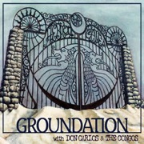
▶ Groundation
Hebron Gate
9 tracks, 54 min · €7 or more · logit +0.1 ± 0.2 · 2.3 listens before · near Matthew McAnuff, Biga*Ranx, Joe Yorke · reggae, roots reggae, dub, roots
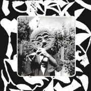
▶ Elijah Minnelli
Clams As A Main Meal
7 tracks, 26 min · name your price · logit +0.1 ± 0.2 · 2 listens before · near Froid Dub · dub, reggae, cumbia, folk
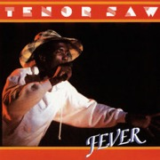
▶ Tenor Saw
Fever
18 tracks, 68 min · $10 or more · logit +0.1 ± 0.2 · 1.1 listens before · near Barrington Levy · reggae, dancehall, roots reggae, jamaica
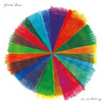
▶ Gianni Brezzo
The Awakening
7 tracks, 23 min · €5 or more · logit -0.1 ± 0.2 · 2.1 listens before · near SHOLTO, Huw Marc Bennett, Rachel Kitchlew · jazz, guitar, ambient, instrumental
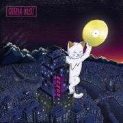
▶ Mahom
King Cat
12 tracks, 44 min · €5 or more · logit -0.1 ± 0.2 · 1.8 listens before · near Art-X, Joe Yorke, Zentone · dub, electronic, dubtronica, french
▶ Rod Anton
Ubatuba
11 tracks, 48 min · €10 or more · logit -0.1 ± 0.2 · near The Co-Operators · dub, reggae, dancehall, roots
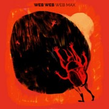
▶ Web Web
WEB MAX
10 tracks, 34 min · €8.50 or more · logit -0.1 ± 0.2 · near Rachel Kitchlew · jazz, german, instrumental, electronic
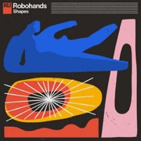
▶ Robohands
Shapes
9 tracks, 29 min · £10 or more · logit -0.2 ± 0.2 · 1.2 listens before · near Huw Marc Bennett, SHOLTO · jazz, chillout, downtempo, the flourishing zoo
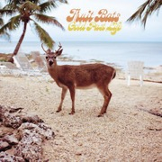
▶ Fruit Bats
Gold Past Life
11 tracks, 39 min · $9 or more · logit -0.2 ± 0.2 · 2 listens before · near Woods, Oracle Sisters · indie, folk, indie pop, indie rock
▶ Mutual Benefit
Love's Crushing Diamond
7 tracks, 32 min · $7 or more · logit -0.2 ± 0.2 · 2.7 listens before · near Woods · folk, lo-fi, indie, indie folk
▶ Skarra Mucci
Greater Than Great
15 tracks, 51 min · €9.99 or more · logit -0.2 ± 0.2 · 0.9 listens before · near Matthew McAnuff, Biga*Ranx, Art-X · reggae, dancehall, deebuzz, jamaica
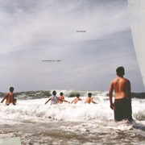
▶ The Offline
La couleur de la mer
13 tracks, 40 min · £8 or more · logit -0.2 ± 0.2 · 1.9 listens before · near SHOLTO, Huw Marc Bennett · jazz, soul, hamburg, instrumental
▶ Paolo Baldini DubFiles
At Song Embassy Papine Kingston 6
15 tracks, 63 min · €8 or more · logit -0.2 ± 0.2 · 0.4 listens before · near The Co-Operators · dub, reggae, italia, italy
▶ Dubcreator
Roar Riddim
6 tracks, 22 min · €9 or more · logit -0.2 ± 0.2 · 1 listen before · near The Co-Operators, Twilight Circus Dub Sound System · dub, reggae, electronic, rap
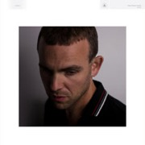
▶ Amen Dunes
Freedom
15 tracks, 73 min · $9 or more · logit -0.2 ± 0.2 · 2.5 listens before · near Woods · lo-fi, psychedelic, folk, experimental
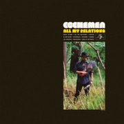
▶ Cochemea
All My Relations
10 tracks, 35 min · $10 or more · logit -0.3 ± 0.2 · 0.1 listens before · near Huw Marc Bennett, Rachel Kitchlew · jazz, new york, usa, world
▶ Marcus Gad
Chanting
13 tracks, 63 min · €9.99 or more · logit -0.3 ± 0.2 · 1.8 listens before · near Joe Yorke · roots, reggae, france, new caledonia
▶ Tenderlonious
The Shakedown
9 tracks, 54 min · £7.99 or more · logit -0.3 ± 0.2 · 1 listen before · near Huw Marc Bennett · electronic, jazz, flute, funk
▶ Vetiver
To Find Me Gone
13 tracks, 63 min · $10 or more · logit -0.3 ± 0.2 · 0.9 listens before · near Woods · folk, indie, freak folk, new weird america
▶ Joseph Shabason
Anne
9 tracks, 49 min · $9 or more · logit -0.3 ± 0.2 · 1.8 listens before · near Woo · ambient, jazz, experimental, nu-jazz
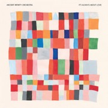
▶ Ancient Infinity Orchestra
It's always about love
8 tracks, 40 min · £8.99 or more · logit -0.3 ± 0.2 · near Huw Marc Bennett, SHOLTO · jazz, instrumental, leeds, united kingdom
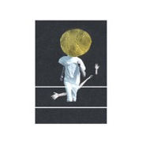
▶ The Vernon Spring
A Plane Over Woods
14 tracks, 33 min · £7 or more · logit -0.3 ± 0.2 · near Domenique Dumont, Woo · ambient, jazz, electronic, piano
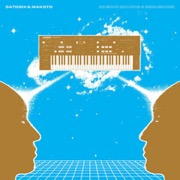
▶ Satoshi & Makoto
CZ-5000 Sounds & Sequences
11 tracks, 51 min · €10 or more · logit -0.3 ± 0.2 · 0.3 listens before · near Domenique Dumont · ambient, electronic, experimental, japanese
▶ Buju Banton
Too Too Bad
13 tracks, 36 min · $10 or more · logit -0.3 ± 0.2 · 0.6 listens before · near Barrington Levy · reggae, dancehall, ragga, roots reggae
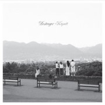
▶ Destroyer
Kaputt
9 tracks, 50 min · $9 or more · logit -0.3 ± 0.2 · 0.2 listens before · near The Clientele, The Walkmen, Grizzly Bear · indie, indie rock, singer-songwriter, canadian
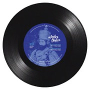
▶ Indica Dubs
Faith From Above
4 tracks, 14 min · £5 or more · logit -0.3 ± 0.2 · 1 listen before · near The Co-Operators · dub, reggae, sound system, steppas
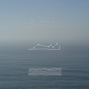
▶ Emily A. Sprague
Water Memory
5 tracks, 39 min · $7 or more · logit -0.3 ± 0.1 · 0.4 listens before · near Domenique Dumont · ambient, experimental, drone, minimal
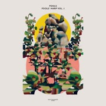
▶ Fools
Fools' Harp, Vol. 1
13 tracks, 50 min · €12 or more · logit -0.3 ± 0.1 · 0.2 listens before · near Domenique Dumont · ambient, electronic, folk, indie
▶ Damien Jurado
Caught in the Trees
8 tracks, 28 min · $8 or more · logit -0.3 ± 0.1 · near Woods · folk, singer-songwriter, indie, americana
▶ Felbm
Tape 3
14 tracks, 39 min · £5.50 or more · logit -0.3 ± 0.1 · 0.5 listens before · near Domenique Dumont, Woo · ambient, lounge, electronic, instrumental
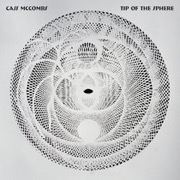
▶ Cass McCombs
Tip of the Sphere
14 tracks, 72 min · $8 or more · logit -0.3 ± 0.1 · 1.4 listens before · near Woods · folk, singer-songwriter, indie, alternative
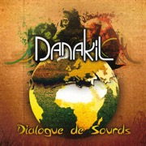
▶ Danakil
Dialogue de sourds
14 tracks, 79 min · €7.99 · logit -0.3 ± 0.1 · 2.1 listens before · near Biga*Ranx, Matthew McAnuff, Joe Yorke · reggae, roots reggae, french reggae, french
▶ Lewis Bennett
Trade Winds
12 tracks, 42 min · £10 or more · logit -0.3 ± 0.1 · 0.2 listens before · near The Co-Operators · dub, reggae, british, uk
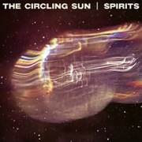
▶ The Circling Sun
Spirits
8 tracks, 48 min · £6.99 or more · logit -0.3 ± 0.1 · near Huw Marc Bennett · jazz, new zealand, cosmic, jazz fusion
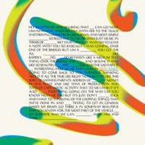
▶ yes/and
yes/and
10 tracks, 31 min · $10 or more · logit -0.3 ± 0.1 · 0.1 listens before · near Domenique Dumont, Woo · ambient, electronic, downtempo, experimental
▶ Daisuke Tanabe
Cat Steps
5 tracks, 22 min · $7 or more · logit -0.4 ± 0.1 · near pilotredsun · idm, electronic, ambient, experimental
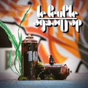
▶ Le Peuple de l'Herbe
10 (24-bit HD audio)
11 tracks, 39 min · €9 or more · logit -0.4 ± 0.1 · near Zentone · dub, electronic, french, drum and bass
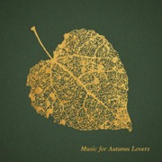
▶ Scrimshire
Music for Autumn Lovers
8 tracks, 39 min · £8 or more · logit -0.4 ± 0.1 · 0.9 listens before · near Huw Marc Bennett, SHOLTO · jazz, soul, nu jazz, funk
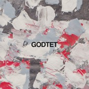
▶ Godtet
Godtet
12 tracks, 32 min · $15 or more · logit -0.4 ± 0.1 · 1.3 listens before · near Huw Marc Bennett · jazz, instrumental, australian, experimental
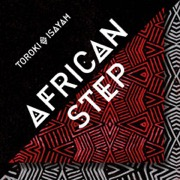
▶ Toroki
African Step
15 tracks, 64 min · €11 or more · logit -0.4 ± 0.1 · near The Co-Operators · digital, dub, reggae, roots
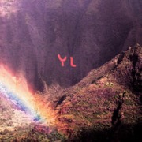
▶ Youth Lagoon
The Year of Hibernation
11 tracks, 46 min · $9 or more · logit -0.4 ± 0.1 · near C Duncan · dream pop, lo-fi, indie, chillwave
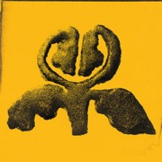
▶ Flaer
Preludes
9 tracks, 26 min · £7 or more · logit -0.4 ± 0.1 · 1.4 listens before · near Woo, Domenique Dumont · ambient, instrumental, contemporary classical, electronic
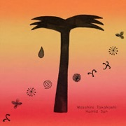
▶ Masahiro Takahashi
Humid Sun
10 tracks, 38 min · $10 or more · logit -0.4 ± 0.1 · 2.2 listens before · near Domenique Dumont · ambient, japanese, instrumental, jazz
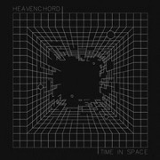
▶ HEAVENCHORD
Time in Space
5 tracks, 67 min · €6 or more · logit -0.4 ± 0.1 · 1.2 listens before · near Subset · ambient, dub techno, ambient techno, techno
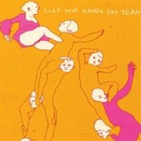
▶ Clap Your Hands Say Yeah
Clap Your Hands Say Yeah
12 tracks, 39 min · $7 or more · logit -0.4 ± 0.1 · near The Walkmen · indie, indie rock, alternative, indie pop
▶ Salamanda
Sphere
8 tracks, 35 min · £8 or more · logit -0.4 ± 0.1 · 0.2 listens before · near Domenique Dumont · ambient, electronic, experimental, idm
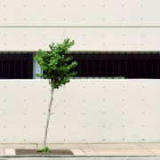
▶ M. Sage
Wants A Diamond Pivot Bright
16 tracks, 43 min · $7 or more · logit -0.4 ± 0.1 · near Woo · ambient, experimental, drone, psychedelic
▶ Khoe Wa
Nadjilo (Khoe Wa Meets Luiza)
5 tracks, 19 min · €5 or more · logit -0.4 ± 0.1 · 1.4 listens before · near The Co-Operators · dub, france, dubstep, sitar
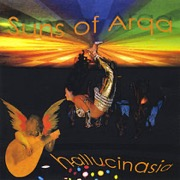
▶ Suns Of Arqa
Hallucinasia
12 tracks, 75 min · £5 or more · logit -0.4 ± 0.1 · 1.5 listens before · near Gaudi · dub, ambient, world, downtempo
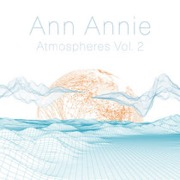
▶ Ann Annie
Atmospheres, Vol. 2
7 tracks, 30 min · $7 or more · logit -0.4 ± 0.1 · 0.6 listens before · near Domenique Dumont, Woo · ambient, folk, contemporary classical, instrumental
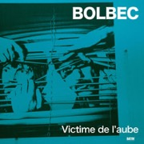
▶ Bolbec
Victime De L'aube
10 tracks, 26 min · £7 or more · logit -0.4 ± 0.1 · 1 listen before · near SHOLTO · french, jazz, cinematic, french jazz
▶ Patricia Wolf
See-Through
12 tracks, 44 min · €9 or more · logit -0.4 ± 0.1 · 1 listen before · near Domenique Dumont, Woo · ambient, experimental, electronic, the flourishing zoo
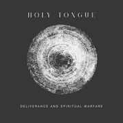
▶ Holy Tongue
Deliverance And Spiritual Warfare
10 tracks, 44 min · £8.99 · logit -0.4 ± 0.1 · 1 listen before · near Froid Dub · dub, the flourishing zoo, experimental, instrumental
▶ H.Takahashi
Low Power
8 tracks, 36 min · $10 or more · logit -0.4 ± 0.1 · 0.6 listens before · near Domenique Dumont · ambient, experimental, electronic, japan
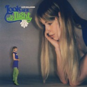
▶ Kate Bollinger
Look at it in the Light
6 tracks, 20 min · $5 or more · logit -0.4 ± 0.1 · near Oracle Sisters · indie, indie pop, pop, female vocalists
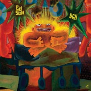
▶ Ebi Soda
Ugh
10 tracks, 42 min · £4.99 or more · logit -0.4 ± 0.1 · near SHOLTO, Huw Marc Bennett · jazz, fusion, uk, instrumental
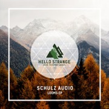
▶ Schulz Audio
Looms
5 tracks, 37 min · €7 or more · logit -0.4 ± 0.1 · 1.4 listens before · near Subset · dub techno, techno, deep dub ambient
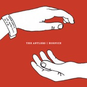
▶ The Antlers
Hospice
10 tracks, 52 min · $7 or more · logit -0.4 ± 0.1 · near Grizzly Bear · indie, indie rock, slowcore, singer-songwriter
▶ Amanda Whiting
After Dark
12 tracks, 47 min · £9 or more · logit -0.4 ± 0.1 · 1 listen before · near SHOLTO · instrumental, jazz, experimental, harp
▶ Slow Attack Ensemble
Music for Turntable, Guitars and Sampled Instruments
9 tracks, 36 min · $10 or more · logit -0.4 ± 0.1 · 1.2 listens before · near Domenique Dumont, Woo · ambient, electronic, canada, instrumental
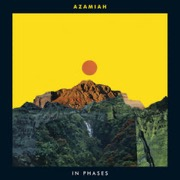
▶ Azamiah
In Phases
12 tracks, 37 min · €11 or more · logit -0.4 ± 0.1 · near Huw Marc Bennett · jazz, vocal, trombone, uk
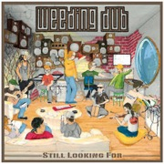
▶ Weeding Dub
Still Looking For
12 tracks, 56 min · €10 or more · logit -0.4 ± 0.1 · 1.8 listens before · near Twilight Circus Dub Sound System · dub, reggae, electro dub reggae, electronic
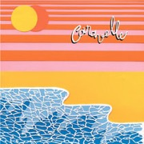
▶ Polo & Pan
Caravelle
streams only · logit -0.4 ± 0.1 · near Papooz, Oracle Sisters · french, indie pop, electronic, indie
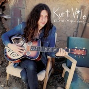
▶ Kurt Vile
b'lieve i'm goin down...
12 tracks, 61 min · $9.99 or more · logit -0.4 ± 0.1 · 0.7 listens before · near Woods · lo-fi, psychedelic, indie, singer-songwriter
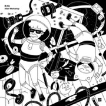
▶ R.Hz
Alien Workshop
4 tracks, 26 min · €6 or more · logit -0.4 ± 0.1 · 0.5 listens before · near Subset · dub techno, ambient, deep house
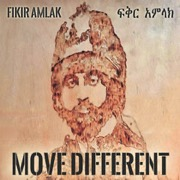
▶ Fikir Amlak
Move Different
10 tracks, 40 min · $9 or more · logit -0.4 ± 0.1 · near The Co-Operators · reggae, roots, dub, jamaica
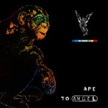
▶ Pitch Black
Ape to Angel
21 tracks, 147 min · £12 or more · logit -0.4 ± 0.1 · 0.3 listens before · near Gaudi · dub, ambient, electronica, thrash metal
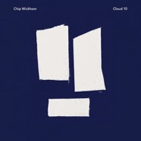
▶ Chip Wickham
Cloud 10
8 tracks, 39 min · £8.99 or more · logit -0.4 ± 0.1 · 1.5 listens before · near SHOLTO, Huw Marc Bennett · jazz, latin, flute, saxophone
▶ Micah Shemaiah
Jamaica Jamaica
15 tracks, 54 min · €10 or more · logit -0.4 ± 0.1 · 0.9 listens before · near The Co-Operators · reggae, dub
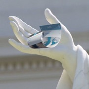
▶ Golden Living Room
POST-INTERNET
17 tracks, 63 min · $4.44 or more · logit -0.4 ± 0.1 · near desert sand feels warm at night · vaporwave, electronic, experimental, hypnagogic
▶ Fatbabs
DEEZ
10 tracks, 30 min · name your price · logit -0.4 ± 0.1 · near Biga*Ranx · france, reggae
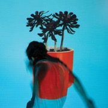
▶ Local Natives
Sunlit Youth
12 tracks, 46 min · $9 or more · logit -0.4 ± 0.1 · near Grizzly Bear · indie, indie rock, folk, indie pop
▶ Yoni Mayraz
Rough Cuts
5 tracks, 12 min · $7 or more · logit -0.5 ± 0.1 · near SHOLTO · jazz, electronic, jazz fusion, piano
▶ Pauline Anna Strom
Trans-Millenia Music
15 tracks, 93 min · $12 or more · logit -0.5 ± 0.1 · 0.5 listens before · near Woo · ambient, new age, electronic, experimental
▶ Sanchez
Time to start
12 tracks, 42 min · $7 or more · logit -0.5 ± 0.1 · near Barrington Levy · reggae, dancehall, lovers rock, soul
▶ El Michels Affair
Enter The 37th Chamber
15 tracks, 37 min · $7.99 or more · logit -0.5 ± 0.1 · 0.9 listens before · near Adrian Quesada · funk, soul, jazz, afrobeat
▶ 猫 シ Corp.
Hiraeth
24 tracks, 48 min · name your price · logit -0.5 ± 0.1 · 0.6 listens before · near desert sand feels warm at night · vaporwave, mallsoft, ambient, post-internet
▶ Orange Blossom
Spells From the Drunken Sirens
streams only · logit -0.5 ± 0.1 · near Zentone · electronic, world music, dub, french
▶ Céline Dessberg
Hödöö
5 tracks, 19 min · €10 or more · logit -0.5 ± 0.1 · 0.2 listens before · near Oracle Sisters · french, singer-songwriter, france, psychedelic
▶ Naâman
Temple Road
17 tracks, 58 min · $7 or more · logit -0.5 ± 0.1 · 0.1 listens before · near Biga*Ranx, Matthew McAnuff, Stand High Patrol · reggae, france, poland
▶ Tennis
Swimmer
9 tracks, 31 min · $9 or more · logit -0.5 ± 0.1 · near Pearl & the Oysters · indie pop, lo-fi, indie, chillwave
▶ Substak
No Space Left
4 tracks, 18 min · €1 or more · logit -0.5 ± 0.1 · near Subset · ambient, techno, drone, dub techno
▶ Phosphorescent
Muchacho
22 tracks, 120 min · $12 or more · logit -0.5 ± 0.1 · 0.1 listens before · near Woods · folk, singer-songwriter, indie, lo-fi
▶ Iration Steppas
Dubz From De Higher Regionz
15 tracks, 74 min · €20 or more · logit -0.5 ± 0.1 · 0.1 listens before · near Twilight Circus Dub Sound System · dub, reggae, roots, uk
▶ Ilkae
Pistachio Island
45 tracks, 65 min · $5 or more · logit -0.5 ± 0.1 · under 0.1 listens before · near pilotredsun · idm, glitch, electronic, electronica
▶ Peel Dream Magazine
Modern Meta Physic
13 tracks, 40 min · $8 or more · logit -0.5 ± 0.1 · near The Clientele, The High Llamas · indie pop, dream pop, indie, shoegaze
▶ The War on Drugs
Lost in the Dream
10 tracks, 61 min · $10 or more · logit -0.5 ± 0.1 · near The Walkmen · indie rock, indie, folk, folk rock
▶ Deux Filles
Shadow Farming
18 tracks, 39 min · £7 or more · logit -0.5 ± 0.1 · 1.1 listens before · near Woo · ambient, dream pop, experimental, art pop
▶ Slag Boom Van Loon
So Soon
11 tracks, 64 min · £7.99 or more · logit -0.5 ± 0.1 · 0.2 listens before · near Boards of Canada · idm, ambient, electronic, downtempo
▶ Discovery Zone
Remote Control
10 tracks, 34 min · €10 or more · logit -0.5 ± 0.1 · near Domenique Dumont · electronic, indie pop, synthpop, ambient
▶ Polygon Window
Surfing on Sine Waves
11 tracks, 57 min · £9 or more · logit -0.5 ± 0.1 · 0.3 listens before · near Boards of Canada, pilotredsun · idm, electronic, ambient, techno
▶ Move 78
The Algorithm Smiles Upon You
8 tracks, 33 min · £7 or more · logit -0.5 ± 0.1 · near Huw Marc Bennett, SHOLTO, Rachel Kitchlew · jazz, instrumental, berlin, hip hop
▶ Christ.
Blue Shift Emissions
11 tracks, 50 min · £5 or more · logit -0.5 ± 0.1 · near Boards of Canada, pilotredsun · idm, ambient, electronic, downtempo
▶ Akron/Family
Akron/Family
14 tracks, 56 min · $9.99 · logit -0.5 ± 0.1 · near Woods · folk, experimental, freak folk, indie
▶ Matthew Halsall
Colour Yes (Special Edition)
8 tracks, 67 min · £8.99 or more · logit -0.5 ± 0.1 · 0.1 listens before · near Huw Marc Bennett · jazz, trumpet, nu jazz, nu-jazz
▶ Infinity Frequencies
Between Two Worlds
24 tracks, 34 min · $1 or more · logit -0.5 ± 0.1 · near desert sand feels warm at night · vaporwave, ambient, broken transmission, electronic
▶ Greg Foat
Symphonie Pacifique
16 tracks, 63 min · £13 or more · logit -0.5 ± 0.1 · 0.7 listens before · near SHOLTO, Huw Marc Bennett, Misha Panfilov · jazz, nu jazz, contemporary jazz, cool jazz
▶ Utah Jazz
The Music Factory
15 tracks, 69 min · £7 or more · logit -0.5 ± 0.1 · near Commix · drum and bass, liquid funk, jungle, drum n bass
▶ US Golf 95
Swing Tournament
12 tracks, 36 min · £1 or more · logit -0.5 ± 0.1 · 1.7 listens before · near desert sand feels warm at night · vaporwave, ambient, electronic, folk
▶ Ras Teo
Mystic Morning
streams only · logit -0.5 ± 0.1 · 1.6 listens before · near The Co-Operators · reggae, roots reggae, conscious artist, jah music
▶ Casino Versus Japan
Whole Numbers Play the Basics
13 tracks, 42 min · $9.99 or more · logit -0.5 ± 0.1 · 1.4 listens before · near Boards of Canada, pilotredsun · idm, ambient, electronic, downtempo
▶ Klute
Fear of People
13 tracks, 76 min · £8 or more · logit -0.5 ± 0.1 · near Commix · drum and bass, jungle, electronic, drum n bass
▶ Tender H
Episodes 06-15
10 tracks, 42 min · €11 or more · logit -0.5 ± 0.1 · near Subset · dub techno, dub, ambient, belarusian
▶ Avguchenko
Hypnotic View EP
4 tracks, 26 min · €4 or more · logit -0.5 ± 0.1 · near Subset · dub techno, ambient, electronic, techno
▶ Mort Garson
Mother Earth's Plantasia
10 tracks, 31 min · $9.99 or more · logit -0.5 ± 0.1 · 0.2 listens before · near Domenique Dumont · electronic, experimental, early electronic, moog
▶ Green-House
Six Songs For Invisible Gardens
6 tracks, 27 min · $6 or more · logit -0.5 ± 0.1 · 1.2 listens before · near Domenique Dumont, Woo · ambient, new age, electronic, experimental
▶ BT Gate X-138
Slow Frequency Emitter
8 tracks, 57 min · €8 or more · logit -0.5 ± 0.1 · near Subset · dub techno, norway, ambient, dub
▶ Flavien Berger
Contre-Temps
13 tracks, 64 min · €9.99 or more · logit -0.5 ± 0.1 · near Papooz, Oracle Sisters · french, synthpop, france, psychedelic
▶ okvsho
Orange Wine
7 tracks, 27 min · €9 or more · logit -0.5 ± 0.1 · near SHOLTO · jazz, electronic, swiss, ambient
▶ Tosca
Suzuki
12 tracks, 60 min · €11 or more · logit -0.5 ± 0.1 · 0.2 listens before · near The Orb · downtempo, chillout, trip-hop, electronic
▶ Svaneborg Kardyb
Superkilen
9 tracks, 40 min · £8.99 or more · logit -0.5 ± 0.1 · near Huw Marc Bennett, SHOLTO · jazz, danish, denmark, instrumental
▶ Jah Acid Dub
Delayrium
10 tracks, 61 min · €8 or more · logit -0.5 ± 0.1 · near Twilight Circus Dub Sound System · dub, electronic, reggae, psydub
▶ Jahneration
The Foreword
6 tracks, 25 min · €5 or more · logit -0.5 ± 0.1 · 1.3 listens before · near Matthew McAnuff, Biga*Ranx · reggae
▶ Adrian Younge
Something About April
9 tracks, 27 min · $10.99 or more · logit -0.5 ± 0.1 · 0.4 listens before · near Adrian Quesada · soul, funk, soundtrack, blaxploitation
▶ The Rootsman
Roots Bloody Rootsman
16 tracks, 74 min · £7 or more · logit -0.5 ± 0.1 · near Twilight Circus Dub Sound System · dub, reggae, electronic, balkan
▶ Altone
Invincible Nature EP
4 tracks, 25 min · €6.50 or more · logit -0.5 ± 0.1 · 2 listens before · near Subset · dub techno, japanese, deep house
▶ Emanative
The Volume of the Light
17 tracks, 80 min · £7 or more · logit -0.5 ± 0.1 · 0.1 listens before · near Huw Marc Bennett · jazz, chillout, electronic, nu jazz
▶ Improvement Movement
Don't Delay, Join Today!
13 tracks, 39 min · name your price · logit -0.5 ± 0.1 · near Pearl & the Oysters · indie pop, psychedelic, indie rock, synthpop
▶ Nmesh
Dream Sequins®
18 tracks, 80 min · $8 or more · logit -0.5 ± 0.1 · 0.6 listens before · near desert sand feels warm at night · vaporwave, ambient, electronic, experimental
▶ Hiss Golden Messenger
Heart Like a Levee
11 tracks, 43 min · $9 or more · logit -0.5 ± 0.1 · 0.4 listens before · near Woods · folk, alt-country, americana, folk rock
▶ 2814
Rain Temple
8 tracks, 66 min · £10 · logit -0.5 ± 0.1 · near desert sand feels warm at night · ambient, vaporwave, downtempo, electronic
▶ Nae:tek
Primal Dub, Vol. 8 (DJ Mix)
3 tracks, 22 min · £2.50 or more · logit -0.5 ± 0.1 · near Subset · dub techno, uk
▶ Deemkeyne
Ratio
7 tracks, 43 min · €5 or more · logit -0.5 ± 0.1 · near Subset · dub techno, techno, composer, germany
▶ Dylan Henner
You Always Will Be
10 tracks, 41 min · £10 or more · logit -0.5 ± 0.1 · near Domenique Dumont, Woo · ambient, experimental, electronic, minimal
▶ Chinese American Bear
Wah!!!
11 tracks, 39 min · £8 or more · logit -0.5 ± 0.1 · 1.5 listens before · near Oracle Sisters, Pearl & the Oysters · indie pop, indie rock, psychedelic rock, garage rock
▶ LFO
LFO
4 tracks, 19 min · £4.50 or more · logit -0.5 ± 0.1 · near The Orb · techno, idm, electronic, warp
▶ strongboi
strongboi
7 tracks, 33 min · €8 or more · logit -0.5 ± 0.1 · near Oracle Sisters · funk, indie pop, chamber pop, electronic
▶ Martina Topley-Bird
Some Place Simple
15 tracks, 37 min · €9 or more · logit -0.5 ± 0.1 · near Portishead · trip-hop, female vocalists, downtempo, electronic
▶ Dub Judah
EXERCISE
streams only · logit -0.5 ± 0.1 · 4 tracks heard before · near Twilight Circus Dub Sound System · dub, reggae, roots reggae, ragga
▶ SeekersInternational
LoversDedicationStation
13 tracks, 34 min · £5 or more · logit -0.5 ± 0.1 · near Froid Dub · dub, ambient, dub techno, electronic
▶ Wax Tailor
Tales of the Forgotten Melodies
18 tracks, 52 min · €7 or more · logit -0.5 ± 0.1 · near Portishead · trip-hop, downtempo, electronic, hip-hop
▶ The Polyphonic Spree
Together We're Heavy
10 tracks, 58 min · $7 or more · logit -0.6 ± 0.1 · near The High Llamas · indie, indie pop, alternative, pop
▶ Hiroshi Yoshimura
Surround
6 tracks, 40 min · $10 or more · logit -0.6 ± 0.1 · 0.7 listens before · near Domenique Dumont, Woo · ambient, electronic, japanese, new age
▶ VANITAS命死
Chromatic readymades from yourself
7 tracks, 23 min · name your price · logit -0.6 ± 0.1 · 2 listens before · near desert sand feels warm at night · vaporwave, belgium, barber beats, belgian
▶ Ducktails
The Flower Lane
10 tracks, 40 min · $10 or more · logit -0.6 ± 0.1 · 0.3 listens before · near Woods · lo-fi, psychedelic, experimental, tropical
▶ Camp Claude
Moody Moon
10 tracks, 32 min · €8 or more · logit -0.6 ± 0.1 · near Papooz · indie pop, synthpop, female vocalists, france
▶ EZ3kiel
Barb4ry
11 tracks, 54 min · €4 or more · logit -0.6 ± 0.1 · near Zentone · dub, trip-hop, electronic, french
▶ Lewis OfMan
Dancy Party
5 tracks, 17 min · €4 or more · logit -0.6 ± 0.1 · 1 listen before · near Papooz · french, electronic, france, indie
▶ Neal Francis
Changes
8 tracks, 36 min · $8 or more · logit -0.6 ± 0.1 · near Adrian Quesada · psychedelic rock, rock, funk, blues
▶ Alice Phoebe Lou
Shelter
9 tracks, 31 min · €8 or more · logit -0.6 ± 0.1 · 3 listens before · near Oracle Sisters · singer-songwriter, folk, indie pop, south africa
▶ Vels Trio
Celestial Greens
11 tracks, 42 min · £8 or more · logit -0.6 ± 0.1 · 0.6 listens before · near Huw Marc Bennett · jazz, instrumental, experimental, brighton
▶ The Sure Fire Soul Ensemble
Step Down
10 tracks, 35 min · $10 or more · logit -0.6 ± 0.1 · 0.1 listens before · near Adrian Quesada · funk, jazz, jazz fusion, soul
▶ Radikal Dub Kolektiv
Radikal Dub Kolektiv
12 tracks, 55 min · €8 or more · logit -0.6 ± 0.1 · near Twilight Circus Dub Sound System · dub, reggae, croatian, psycho reggae
▶ Naran Ratan
trees etc.
9 tracks, 22 min · £9 or more · logit -0.6 ± 0.1 · 1.2 listens before · near Domenique Dumont, Woo · ambient, tasty morsels, electronic, uk
▶ The Kyoto Connection
Postcards
15 tracks, 61 min · $10 or more · logit -0.6 ± 0.1 · 0.5 listens before · near Domenique Dumont · ambient, pop, electronic, electronica
▶ Smith Westerns
Dye It Blonde
10 tracks, 35 min · $9 or more · logit -0.6 ± 0.1 · near Woods · lo-fi, garage rock, noise pop, indie
▶ Nicolas Barnes
Ti Gde
4 tracks, 25 min · €3 or more · logit -0.6 ± 0.1 · 0.2 listens before · near Subset · dub techno, deep house, latvian
▶ ddwy
Beaming Backwards
4 tracks, 21 min · £4.50 or more · logit -0.6 ± 0.1 · near Froid Dub · dub, ambient, chill, downtempo
▶ Total Science
Audio Works 01 [CIAAWCD 1]
12 tracks, 74 min · £8.50 or more · logit -0.6 ± 0.1 · near Commix · drum and bass, jungle, electronic, dnb
▶ Kessoncoda
Outerstate
10 tracks, 35 min · £8.99 or more · logit -0.6 ± 0.1 · near SHOLTO, Huw Marc Bennett · jazz, instrumental, electronic, nu jazz
▶ el choop
Closing Motif EP
4 tracks, 29 min · €5 or more · logit -0.6 ± 0.1 · near Subset · techno, dub techno, welsh
▶ midub
Tales EP
3 tracks, 17 min · name your price · logit -0.6 ± 0.1 · near Subset · deep, dub techno
▶ Lenzman
Earth Tones
10 tracks, 45 min · €7.50 or more · logit -0.6 ± 0.1 · near Commix · drum and bass, liquid funk, hip hop, soul
▶ Kaitlyn Aurelia Smith
I Could Be Your Dog / I Could Be Your Moon
13 tracks, 35 min · $13 or more · logit -0.6 ± 0.1 · 2 listens before · near Domenique Dumont · ambient, electronic, experimental, dream pop
▶ Σtella
Up and Away
10 tracks, 31 min · $10 · logit -0.6 ± 0.1 · near Oracle Sisters · indie pop, greek, female vocalists, greece
▶ Soulstice
Illusion
11 tracks, 64 min · $10 or more · logit -0.6 ± 0.1 · near Portishead · trip-hop, chillout, acid jazz, electronic
▶ Sully
Swandive
4 tracks, 19 min · £6 or more · logit -0.6 ± 0.1 · near Nia Archives · dubstep, future garage, bass, jungle
▶ Shinsuke Matsumoto
lantern
10 tracks, 69 min · $10 · logit -0.6 ± 0.1 · near Subset · dub techno, japanese, all, ambient
▶ Van Bonn
Cloudwalker
5 tracks, 30 min · €4 or more · logit -0.6 ± 0.1 · 1 listen before · near Subset · ambient, dub, downbeat, techno
▶ Purelink
Purelink
2 tracks, 65 min · $10 or more · logit -0.6 ± 0.1 · near Woo, Domenique Dumont · ambient, electronic, ambient dub, dub
▶ O & the Mo
Make Way For The Sun
9 tracks, 31 min · $12 or more · logit -0.6 ± 0.1 · near Oracle Sisters · dream pop, indie pop, new zealand, psychedelic
▶ Luxury Elite
world class
20 tracks, 49 min · name your price · logit -0.6 ± 0.1 · 0.7 listens before · near desert sand feels warm at night · vaporwave, newbreed, chillwave, electronic
▶ Instra:mental
Timelines
12 tracks, 67 min · £10 or more · logit -0.6 ± 0.1 · near Commix · drum and bass, dubstep, drumfunk, electronic
▶ L'Impératrice
Odyssée - EP
6 tracks, 22 min · €6 or more · logit -0.6 ± 0.1 · 0.7 listens before · near Papooz · french, synthpop, electronic, funk
▶ Vega Trails
Tremors in the Static
9 tracks, 36 min · £8.99 or more · logit -0.6 ± 0.1 · 1 listen before · near Rachel Kitchlew · jazz, the flourishing zoo, british, instrumental
▶ Parlor Greens
In Green We Dream
11 tracks, 35 min · $10 or more · logit -0.6 ± 0.1 · near Adrian Quesada · jazz, soul, funk, guitar
▶ FM Skyline
Illuminations
13 tracks, 44 min · $7 or more · logit -0.6 ± 0.1 · 0.2 listens before · near desert sand feels warm at night · vaporwave, electronic, synthwave, chillsynth
▶ A Forest Mighty Black
Mellowdramatic
10 tracks, 53 min · €8.50 or more · logit -0.6 ± 0.1 · near Portishead · downtempo, chillout, acid jazz, lounge
▶ Random Movement
Life is Permanent EP
4 tracks, 22 min · $3.99 or more · logit -0.6 ± 0.1 · near Commix · drum and bass, liquid funk, dnb, soulful drum and bass
▶ Basicnoise
Pattern Explorations
11 tracks, 78 min · €11 or more · logit -0.6 ± 0.1 · 0.1 listens before · near Subset · dub techno, minimal, electronic, ambient
▶ Dubdadda
Lo-Fi Pon De Hi-Fi
streams only · logit -0.6 ± 0.1 · 0.2 listens before · near Twilight Circus Dub Sound System · dub, reggae, all, electro dub
▶ Berry Weight
Music For Imaginary Movies
11 tracks, 43 min · €10 or more · logit -0.6 ± 0.1 · near Portishead · trip-hop, downtempo, abstract hip-hop, idm
▶ Lunar Vacation
Swell
5 tracks, 17 min · $7 or more · logit -0.6 ± 0.1 · near Pearl & the Oysters · dream pop, indie pop, indie, female vocalists
▶ Roy Montgomery
Temple IV
9 tracks, 73 min · $9 or more · logit -0.6 ± 0.1 · near Woo · post-rock, ambient, space rock, drone
▶ Remember
ルートバックホーム
7 tracks, 59 min · £10 · logit -0.6 ± 0.1 · 0.3 listens before · near desert sand feels warm at night · ambient, vaporwave, hardcore, hardcore punk
▶ Jimmy Whoo
Basic instinct
12 tracks, 33 min · €7 or more · logit -0.6 ± 0.1 · near Papooz · french, hip-hop, france, chillout
▶ The Karminsky Experience Inc.
Beat!
15 tracks, 39 min · £7 or more · logit -0.6 ± 0.1 · near Portishead · downtempo, lounge, chillout, electronic
▶ MUNYA
Voyage to Mars
12 tracks, 42 min · $9 or more · logit -0.6 ± 0.1 · near Pearl & the Oysters · dream pop, indie pop, psychedelic pop, psychedelic
▶ Natalie Bergman
Keep Those Teardrops from Falling
4 tracks, 12 min · $5.16 or more · logit -0.6 ± 0.1 · near Oracle Sisters · indie pop, soul, folk, singer-songwriter
▶ The Babies
The Babies
12 tracks, 55 min · $8.20 or more · logit -0.6 ± 0.1 · near Woods · lo-fi, garage rock, surf rock, indie
▶ Momus
Humperstinck
16 tracks, 60 min · €12 or more · logit -0.6 ± 0.1 · near The High Llamas · singer-songwriter, indie pop, electronic, indie
▶ Adam F
Colours
10 tracks, 58 min · £9.99 or more · logit -0.6 ± 0.1 · near Nia Archives · drum and bass, jungle, electronic, drum n bass
▶ Les Gammas
Exercices de Styles
13 tracks, 74 min · €8.50 or more · logit -0.6 ± 0.1 · near Portishead · chillout, downtempo, lounge, nu-jazz
▶ Hamilton Leithauser
Dear God
13 tracks, 40 min · $7 or more · logit -0.6 ± 0.1 · 0.2 listens before · near The Walkmen · indie rock, singer-songwriter, indie, indie pop
▶ Fila Brazillia
A Touch Of Cloth
12 tracks, 53 min · £7 or more · logit -0.6 ± 0.1 · 0.8 listens before · near The Orb · downtempo, chillout, trip-hop, electronic
▶ Sraunus
atmospheric insomnia
8 tracks, 68 min · €10 or more · logit -0.6 ± 0.1 · near Subset · dub techno, ambient, ambient techno, minimal
▶ 18 days
日が続く m e l i s s a
7 tracks, 31 min · name your price · logit -0.7 ± 0.1 · near desert sand feels warm at night · slushwave, ambient, dreampunk, vaporwave
▶ Ekstendia
Roots
3 tracks, 26 min · $6 or more · logit -0.7 ± 0.1 · near Subset · dub techno, minimal techno, dub deep shamanic, dub deep shamanic techno
▶ Brijean
Feelings
11 tracks, 32 min · $9 or more · logit -0.7 ± 0.1 · near Pearl & the Oysters · house, indie pop, jazz, pop
▶ Agar Agar
Cardan
5 tracks, 31 min · €10 or more · logit -0.7 ± 0.1 · 1 listen before · near Papooz · synthpop, indie pop, french, france
▶ Laraaji
Celestial Music 1978 - 2011
20 tracks, 120 min · £8 or more · logit -0.7 ± 0.1 · 0.8 listens before · near Woo · ambient, minimalism, instrumental, african
▶ 4am Kru
High Time
4 tracks, 18 min · £4.50 or more · logit -0.7 ± 0.1 · near Nia Archives · jungle, rave, breakbeat, old school hardcore
▶ Chartreuse
Keep Checking Up On Me
5 tracks, 17 min · £2.99 or more · logit -0.7 ± 0.1 · near C Duncan · ambient, indie, indie folk, indie rock
▶ Tapes 'n Tapes
The Loon
11 tracks, 41 min · $7 or more · logit -0.7 ± 0.1 · near The Walkmen · indie, indie rock, alternative, lo-fi
▶ Pi Ja Ma
Magnetofille
12 tracks, 32 min · €9 or more · logit -0.7 ± 0.1 · near Papooz · france, indie pop, french, indie
▶ Moses Yoofee Trio
MYT
13 tracks, 37 min · €10 or more · logit -0.7 ± 0.1 · near SHOLTO, Rachel Kitchlew · jazz, german, instrumental, jazz fusion
▶ Pépite
Les bateaux
4 tracks, 15 min · €4 or more · logit -0.7 ± 0.1 · near Papooz · france, french, pop, electronic
▶ Manutension
Strictly For Sound System Dub (Dub Attacks The Tech, Vol. 1)
12 tracks, 68 min · €7.50 or more · logit -0.7 ± 0.1 · 1.9 listens before · near Twilight Circus Dub Sound System · dub, electro dub, electronic, french
▶ Webinar™
w w w . d e e p d i v e . c o m
15 tracks, 63 min · name your price · logit -0.7 ± 0.1 · 0.7 listens before · near desert sand feels warm at night · experimental, united states, utah, vaporwave
▶ The Radio Dept.
Pet Grief
12 tracks, 37 min · $7 or more · logit -0.7 ± 0.1 · 0.4 listens before · near The Clientele · shoegaze, indie, swedish, indie pop
▶ DJ Zinc
Wile Out
3 tracks, 15 min · £2 or more · logit -0.7 ± 0.1 · near Nia Archives · drum and bass, jungle, electronic, dnb
▶ Cyantific
Ghetto Blaster
13 tracks, 76 min · £9.25 or more · logit -0.7 ± 0.1 · near Commix · drum and bass, liquid funk, dnb, hospital records
▶ Hallmark '87
A T R I U M
15 tracks, 54 min · name your price · logit -0.7 ± 0.1 · near desert sand feels warm at night · mallsoft, vaporwave, ambient, experimental
▶ Submorphics
Detroit Haze
10 tracks, 41 min · €7.50 or more · logit -0.7 ± 0.1 · 0.3 listens before · near Commix · drum and bass, liquid funk, soulful drum and bass, dnb
▶ Isaac Delusion
Rust & Gold
12 tracks, 46 min · €10 or more · logit -0.7 ± 0.1 · 1 listen before · near Papooz, Oracle Sisters · indie pop, indietronica, electronic, downtempo
▶ The Cactus Channel
Stay A While
11 tracks, 51 min · $13 or more · logit -0.7 ± 0.1 · 0.5 listens before · near Adrian Quesada · funk, soul, jazz, australian
▶ Polyrhythmics
Caldera
12 tracks, 60 min · $9.99 or more · logit -0.7 ± 0.1 · near Adrian Quesada · afrobeat, funk, jazz, instrumental
▶ Mamalarky
Mamalarky
10 tracks, 30 min · $13 or more · logit -0.7 ± 0.1 · near Pearl & the Oysters · indie rock, dream pop, united states, indie pop
▶ Other Lives
Tamer Animals
12 tracks, 44 min · $10 or more · logit -0.7 ± 0.1 · near C Duncan · indie, folk, indie folk, alternative
▶ The Felice Brothers
Yonder is the Clock
13 tracks, 55 min · $7 or more · logit -0.7 ± 0.1 · near Woods · folk, americana, alt-country, indie folk
▶ Kainalu
Lotus Gate
8 tracks, 37 min · name your price · logit -0.7 ± 0.1 · near Pearl & the Oysters · indie pop, psychedelic, electronic, synthpop
▶ King Tuff
King Tuff
12 tracks, 40 min · $10 · logit -0.7 ± 0.1 · near Woods · garage rock, lo-fi, psychedelic, garage pysch
▶ Jon Hassell
Listening To Pictures (Pentimento Volume One)
8 tracks, 39 min · £10 · logit -0.7 ± 0.1 · 0.8 listens before · near Woo · ambient, jazz, experimental, electronic
▶ Miel De Montagne
Miel de Montagne
11 tracks, 39 min · €9.99 or more · logit -0.7 ± 0.1 · near Papooz, Oracle Sisters · france, french, dream pop, indie pop
▶ Monophonics
It's Only Us
8 tracks, 39 min · $8 or more · logit -0.7 ± 0.1 · 0.5 listens before · near Adrian Quesada · funk, soul, afrobeat, psychedelic
▶ Seba
Identity
10 tracks, 61 min · €9.99 or more · logit -0.7 ± 0.1 · near Commix · drum and bass, atmospheric drum and bass, drumfunk, dnb
▶ Dent May
Warm Blanket
11 tracks, 41 min · $9.99 or more · logit -0.7 ± 0.1 · near Pearl & the Oysters · indie pop, singer-songwriter, acoustic, indie
▶ Kuba
Inside Out
11 tracks, 70 min · name your price · logit -0.7 ± 0.1 · near Gaudi · ambient, downtempo, psychill, dub
▶ The Olympians
The Olympians
11 tracks, 40 min · $7.99 or more · logit -0.7 ± 0.1 · 0.8 listens before · near Adrian Quesada, Misha Panfilov · jazz, soul, funk, afro soul
▶ Deerhunter
Microcastle
25 tracks, 83 min · $13 or more · logit -0.7 ± 0.1 · 0.1 listens before · near Grizzly Bear, The Walkmen · shoegaze, experimental, psychedelic, indie
▶ Zen Baboon
Beat Generation
9 tracks, 46 min · €7 or more · logit -0.7 ± 0.1 · near Gaudi · ambient, chillout, psychill, psybient
▶ Kliment
The Perpetual Ritual
8 tracks, 72 min · €9 or more · logit -0.7 ± 0.1 · near Gaudi · ambient, psychill, progressive trance, progressive
▶ Shulman
Endless Rhythms of the Beatless Heart
8 tracks, 77 min · $8.99 or more · logit -0.7 ± 0.1 · near Gaudi · ambient, psychill, chillout, psychedelic
▶ Emma-Jean Thackray
Yellow
14 tracks, 49 min · £8 or more · logit -0.7 ± 0.1 · 0.1 listens before · near Huw Marc Bennett · jazz, electronic, british, trumpet
▶ Sam Prekop
Sam Prekop
10 tracks, 46 min · $9 or more · logit -0.7 ± 0.1 · 2.2 listens before · near The Clientele, The High Llamas · indie, post-rock, indie pop, singer-songwriter
▶ The Budos Band
The Budos Band
11 tracks, 37 min · $7.99 or more · logit -0.7 ± 0.1 · 1.2 listens before · near Adrian Quesada · funk, afrobeat, jazz, soul
▶ Paperclip Minimiser
II
7 tracks, 37 min · $9 or more · logit -0.7 ± 0.1 · near Froid Dub · dub, ambient, idm, techno
▶ Mr. Cloudy
Recluse
9 tracks, 73 min · €9 · logit -0.7 ± 0.1 · 0.1 listens before · near Subset · dub techno, dub, ambient, techno
▶ Nae-tek
Primal Dub ( Original Mix )
3 tracks, 22 min · £2.50 or more · logit -0.7 ± 0.1 · near Subset · house, techno, dub techno
▶ Alex Reece
Alex Reece - The ElectroFlyz Series Vol.1
6 tracks, 27 min · £5 or more · logit -0.7 ± 0.1 · 0.2 listens before · near Nia Archives · drum and bass, jungle, electronic, dnb
▶ Penza Penza
Neanderthal Rock
8 tracks, 34 min · €10 or more · logit -0.7 ± 0.1 · near Misha Panfilov · funk, jazz, psychedelic, psychedelic rock
▶ Django Django
Django Django
13 tracks, 49 min · €7 or more · logit -0.7 ± 0.1 · near C Duncan · psychedelic, indie, experimental, british
▶ La Femme
Psycho Tropical Berlin
18 tracks, 73 min · €6.99 or more · logit -0.7 ± 0.1 · 0.6 listens before · near Papooz · french, new wave, cold wave, surf
▶ HKE
HK
7 tracks, 51 min · £10 · logit -0.7 ± 0.1 · near desert sand feels warm at night · vaporwave, ambient, electronic, dreampunk
▶ TORRES
Sprinter
9 tracks, 45 min · $8 or more · logit -0.7 ± 0.1 · near C Duncan · indie, folk, alternative, indie pop
▶ Generationals
Heza
10 tracks, 34 min · $10 or more · logit -0.7 ± 0.1 · 1 listen before · near Oracle Sisters · indie, indie pop, indie rock, jangle pop
▶ Freescha
Kids Fill the Floor
13 tracks, 52 min · $10 or more · logit -0.7 ± 0.1 · 0.1 listens before · near Boards of Canada · idm, ambient, electronic, atmospheric
▶ Yussef Kamaal
Black Focus
10 tracks, 44 min · £9 or more · logit -0.8 ± 0.1 · 0.6 listens before · near Huw Marc Bennett · jazz, jazz fusion, jazz-funk, london
▶ Cléa Vincent
Non mais oui
6 tracks, 24 min · €5 or more · logit -0.8 ± 0.1 · 0.3 listens before · near Papooz · synthpop, french, electronic, indie pop
▶ 天堂山
天堂山：最精美的收藏
20 tracks, 345 min · name your price · logit -0.8 ± 0.1 · near desert sand feels warm at night · ambient, british, slushwave
▶ Luna
Penthouse
12 tracks, 57 min · $7 or more · logit -0.8 ± 0.1 · 0.4 listens before · near The Clientele · dream pop, indie pop, indie, indie rock
▶ Jefre Cantu-Ledesma
Love Is a Stream
12 tracks, 45 min · name your price · logit -0.8 ± 0.1 · 0.8 listens before · near Woo · ambient, drone, noise, experimental
▶ Tindersticks
Tindersticks
20 tracks, 99 min · €14 or more · logit -0.8 ± 0.1 · 0.1 listens before · near The High Llamas · chamber pop, indie, alternative, indie rock
▶ Myd
Born A Loser
14 tracks, 52 min · €10 or more · logit -0.8 ± 0.1 · 0.1 listens before · near Papooz · french, house, electronic, french house
▶ Voyou
Les bruits de la ville
12 tracks, 46 min · €10 or more · logit -0.8 ± 0.1 · 0.6 listens before · near Papooz · france, french, pop, techno
▶ Microdisney
Everybody is Fantastic
14 tracks, 44 min · £7.99 · logit -0.8 ± 0.1 · near The High Llamas · new wave, pop, 80s, indie pop
▶ Asta Hiroki
Entropy
10 tracks, 37 min · £7.99 or more · logit -0.8 ± 0.1 · near SHOLTO · british, instrumental, brighton, experimental
▶ Blu Mar Ten
The Six Million Names of God
17 tracks, 63 min · £8.99 or more · logit -0.8 ± 0.1 · near Commix · drum and bass, atmospheric drum and bass, ambient, electronic
▶ Tokyo Tea Room
No Rush
12 tracks, 36 min · €12 · logit -0.8 ± 0.1 · near Oracle Sisters · dream pop, indie pop, bedroom pop, indie
▶ Barrie
Happy To Be Here
10 tracks, 34 min · $8 or more · logit -0.8 ± 0.1 · near Pearl & the Oysters · dream pop, indie pop, indie, female vocalists
▶ Vytis
Deepchord Avenue
10 tracks, 75 min · €6 or more · logit -0.8 ± 0.1 · near Subset · dub techno, techno, ambient, electronic
▶ Say She She
Prism
8 tracks, 29 min · $10 or more · logit -0.8 ± 0.1 · near Adrian Quesada · funk, soul, pop, rnb
▶ haircuts for men
a path
5 tracks, 48 min · £10 · logit -0.8 ± 0.1 · near desert sand feels warm at night · vaporwave, chillwave, electronic, barber beats
▶ Oscar Anton
Home of Sanity (the playlist)
9 tracks, 18 min · €10 or more · logit -0.8 ± 0.1 · near Papooz · french, pop, electronic, indie pop
▶ The Cribs
Men's Needs, Women's Needs, Whatever
35 tracks, 122 min · £6.99 or more · logit -0.8 ± 0.1 · near The Walkmen · indie rock, indie, british, alternative
▶ Desert Dwellers
DownTemple Dub: Remixed
11 tracks, 70 min · $9 or more · logit -0.8 ± 0.1 · near Gaudi · ambient, chillout, downtempo, world fusion
▶ Bop
Remix Your Mind
5 tracks, 31 min · £5.25 or more · logit -0.8 ± 0.1 · near Clubroot · microfunk, drum and bass, idm, electronic
▶ Dave Marian
Pleiades
5 tracks, 42 min · €1.80 or more · logit -0.8 ± 0.1 · near Subset · dub techno, ambient, acoustic, electronica
▶ Mojave 3
Ask Me Tomorrow
9 tracks, 41 min · £9.99 or more · logit -0.8 ± 0.1 · 0.9 listens before · near The Clientele · dream pop, shoegaze, folk, indie
▶ BC Camplight
Shortly After Takeoff
9 tracks, 34 min · £7 or more · logit -0.8 ± 0.1 · near C Duncan · singer-songwriter, indie pop, indie rock, usa
▶ Japandroids
Celebration Rock
8 tracks, 35 min · $10 or more · logit -0.8 ± 0.1 · near The Walkmen · noise rock, garage rock, indie, indie rock
▶ Overcast Sound
Water Lines
5 tracks, 49 min · €7 or more · logit -0.8 ± 0.1 · near Subset · dub techno, dub, ambient, deep techno
▶ Cassia
Reaching the Ruins — EP (Instrumental)
8 tracks, 34 min · $7 or more · logit -0.8 ± 0.1 · near Oracle Sisters · indie pop, indie, indie rock, synthpop
▶ Delvon Lamarr Organ Trio
I Told You So
9 tracks, 41 min · $10 or more · logit -0.8 ± 0.1 · near Adrian Quesada · funk, jazz, instrumental, fusion
▶ twen
One Stop Shop
10 tracks, 38 min · $10 or more · logit -0.8 ± 0.1 · near Oracle Sisters · indie pop, shoegaze, indie rock, psychedelic
▶ Sofie Royer
Cult Survivor
12 tracks, 39 min · $10 or more · logit -0.8 ± 0.1 · near Pearl & the Oysters · indie pop, austrian, indie, pop
▶ Husbands
After the Gold Rush Party
13 tracks, 36 min · name your price · logit -0.8 ± 0.1 · near Oracle Sisters · indie pop, synthpop, electronic, indie
▶ Summer Salt
Driving to Hawaii
6 tracks, 21 min · $5 or more · logit -0.8 ± 0.1 · near Oracle Sisters · indie, indie pop, surf, surf rock
▶ Saafi Brothers
Supernatural
11 tracks, 78 min · €9 or more · logit -0.8 ± 0.1 · near Gaudi · ambient, psychill, chillout, psytrance
▶ Ocote Soul Sounds
Taurus
12 tracks, 48 min · $8 or more · logit -0.8 ± 0.1 · near Adrian Quesada · afrobeat, latin, trip hop, funk
▶ Bleu Toucan
Origami
4 tracks, 15 min · €2.99 or more · logit -0.8 ± 0.1 · 0.2 listens before · near Papooz · french, soul, france, synthpop
▶ Pilotredsky
Doggone Systems EP
5 tracks, 21 min · $3 or more · logit -0.8 ± 0.1 · near pilotredsun · idm, downtempo, drill and bass, drum and bass
▶ McCarthy
Banking, Violence and the Inner Life Today
streams only · logit -0.8 ± 0.1 · near The Clientele · indie pop, c86, twee, indie
▶ Astrid Sonne
Great Doubt
9 tracks, 27 min · €8 or more · logit -0.8 ± 0.1 · near Woo · experimental, ambient, electronic, glitch
▶ Monade
Puni
11 tracks, 44 min · €5 or more · logit -0.8 ± 0.1 · near The High Llamas · dream pop, french, indie, indie pop
▶ Gwenno Morgan
gwyw
12 tracks, 31 min · £7 or more · logit -0.8 ± 0.1 · near SHOLTO · jazz, piano, composer, welsh
▶ Bad Company UK
The Nine (Remastered)
3 tracks, 19 min · £3 · logit -0.8 ± 0.1 · near Commix · drum and bass, techstep, jungle, dnb
▶ Gruff Rhys
American Interior
23 tracks, 82 min · £9.99 or more · logit -0.8 ± 0.1 · near The High Llamas · indie, singer-songwriter, welsh, indie pop
▶ No Vacation
Amo XO
8 tracks, 14 min · $5 or more · logit -0.8 ± 0.1 · 0.6 listens before · near Oracle Sisters · indie pop, dream pop, indie, indie rock
▶ Tim Kossmann
In The Garden EP
8 tracks, 62 min · €5 or more · logit -0.9 ± 0.1 · near Subset · dub techno, ambient
▶ The Pastels
Truckload Of Trouble
18 tracks, 62 min · £10 · logit -0.9 ± 0.1 · 0.2 listens before · near The Clientele, The High Llamas · indie pop, twee, scottish, c86
▶ Wild Beasts
Two Dancers
11 tracks, 43 min · $9.99 or more · logit -0.9 ± 0.1 · near Grizzly Bear · indie rock, indie, british, indie pop
▶ Marci
marci
11 tracks, 33 min · $10 or more · logit -0.9 ± 0.1 · near Pearl & the Oysters · dream pop, indie pop, synthpop, upcoming album 2022
▶ The National
Boxer
12 tracks, 43 min · £9.99 or more · logit -0.9 ± 0.1 · near The Walkmen · indie rock, indie, alternative, alternative rock
▶ Loma
Don't Shy Away
11 tracks, 44 min · $10 · logit -0.9 ± 0.1 · 0.4 listens before · near C Duncan · indie, ambient, female vocalists, rock
▶ Crystal Stilts
In Love With Oblivion
11 tracks, 44 min · $7 · logit -0.9 ± 0.1 · near Woods · post-punk, shoegaze, psychedelic, noise pop
▶ Enigma Dubz
The Journey so Far, Pt. 1
11 tracks, 55 min · £7 or more · logit -0.9 ± 0.1 · near Clubroot · dubstep, electronic, ambient, uk garage
▶ Louis Philippe
Delta Kiss/Sunshine
17 tracks, 53 min · £7.99 or more · logit -0.9 ± 0.1 · near The High Llamas · chamber pop, french, indie pop, pop
▶ Kaya Project
Elixir
12 tracks, 72 min · £4 or more · logit -0.9 ± 0.1 · near Gaudi · ambient, chillout, downtempo, psychill
▶ Avey Tare
Down There
9 tracks, 35 min · £9.99 or more · logit -0.9 ± 0.1 · 0.2 listens before · near Grizzly Bear · experimental, psychedelic, freak folk, electronic
▶ Atlas Sound
Logos
11 tracks, 44 min · $9 or more · logit -0.9 ± 0.1 · 0.2 listens before · near Grizzly Bear · shoegaze, experimental, psychedelic, ambient
▶ Jafu
Second Impressions
13 tracks, 54 min · £8 or more · logit -0.9 ± 0.1 · 0.2 listens before · near Clubroot · dubstep, idm, deep dubstep, canadian
▶ Lee Fields & The Expressions
Special Night
10 tracks, 39 min · $9.99 or more · logit -0.9 ± 0.1 · near Adrian Quesada · soul, funk, blues, vintage
▶ Ulterior Motive
The Real - EP
4 tracks, 23 min · £5.96 or more · logit -0.9 ± 0.1 · near Commix · drum and bass, neurofunk, techstep, dnb
▶ Orgone
The Killion Floor
17 tracks, 76 min · $9.99 or more · logit -0.9 ± 0.1 · near Adrian Quesada · funk, technical death metal, soul, afrobeat
▶ death's dynamic shroud.wmv
世界大戦OLYMPICS
18 tracks, 59 min · name your price · logit -0.9 ± 0.1 · near desert sand feels warm at night · vaporwave, electronic, experimental, plunderphonics
▶ Tim Reaper
In Full Effect
8 tracks, 46 min · £9 or more · logit -0.9 ± 0.1 · 0.2 listens before · near Nia Archives · jungle, ambient, breakbeat, experimental electronic
▶ Flavor Foley
Cardiac Contrepoint
9 tracks, 33 min · $6.90 or more · logit -0.9 ± 0.1 · near Jamie Paige · english, vocaloid, electronic, pop
▶ Klangkarussell
nineteentilltwentytwo
streams only · logit -0.9 ± 0.1 · 2 tracks heard before · near Roya · house, minimal, electro, electronic
Played, not owned Unowned albums you have played in the last year, the latest played first. buy? marks one past 2 listens of the whole album on 2 days.
▶ Elijah Minnellibuy?
Clams As A Main Meal
7 tracks, 26 min · name your price · 2 listens on 2 days, 19 Nov to 20 Nov
▶ Amen Dunes
Freedom
15 tracks, 73 min · $9 or more · 1.3 listens on 2 days, 17 Nov to 20 Nov
▶ Prince Fattybuy?
Artikal Intelligence
10 tracks, 38 min · £7 or more · 5.8 listens on 10 days, Dec 2024 to 20 Nov
▶ Generationals
Heza
10 tracks, 34 min · $10 or more · 1 listen on 2 days, 1 Nov to 20 Nov
▶ Alice Phoebe Loubuy?
Shelter
9 tracks, 31 min · €8 or more · 3 listens on 3 days, 2 Nov to 20 Nov
▶ The Revolutionariesbuy?
Earthquake Dub
10 tracks, 31 min · $10 or more · 7.6 listens on 15 days, Jun 2025 to 19 Nov
▶ Deux Filles
Shadow Farming
18 tracks, 39 min · £7 or more · 0.9 listens on 1 day, 19 Nov
▶ Gaudibuy?, saved on Spotify
Jazz Gone Dub
9 tracks, 38 min · £9 or more · 9.6 listens on 14 days, Dec 2025 to 19 Nov
▶ Molly Lewisbuy?, saved on Spotify
Mirage
6 tracks, 22 min · $6 or more · 11.7 listens on 12 days, 11 Feb to 19 Nov
▶ E Ruscha Vbuy?, saved on Spotify
Who Are You
9 tracks, 35 min · $12 or more · 13 listens on 16 days, 26 Feb to 19 Nov
▶ The Co-Operatorsbuy?, saved on Spotify
Rhythms from the Kitchen Sink
9 tracks, 35 min · £8 or more · 9.6 listens on 17 days, Dec 2025 to 19 Nov
▶ Indica Dubs
Faith From Above
4 tracks, 14 min · £5 or more · 1 listen on 1 day, 19 Nov
▶ Joe Yorkebuy?, saved on Spotify
Noise and Emptiness
11 tracks, 37 min · £9 or more · 16.7 listens on 17 days, Aug 2024 to 19 Nov
▶ Schulz Audio
Looms
5 tracks, 37 min · €7 or more · 1.2 listens on 1 day, 18 Nov
▶ HEAVENCHORD
Time in Space
5 tracks, 67 min · €6 or more · 1 listen on 1 day, 18 Nov
▶ Mutual Benefit
Love's Crushing Diamond
7 tracks, 32 min · $7 or more · 1 listen on 1 day, 18 Nov
▶ Gianni Brezzobuy?
The Awakening
7 tracks, 23 min · €5 or more · 2.1 listens on 3 days, 4 Jul to 18 Nov
▶ Flaer
Preludes
9 tracks, 26 min · £7 or more · 1.2 listens on 3 days, Jul 2025 to 17 Nov
▶ Amanda Whiting
After Dark
12 tracks, 47 min · £9 or more · 1 listen on 1 day, 17 Nov
▶ Bolbec
Victime De L'aube
10 tracks, 26 min · £7 or more · 1 listen on 1 day, 17 Nov
▶ Fruit Bats
Gold Past Life
11 tracks, 39 min · $9 or more · 1 listen on 1 day, 17 Nov
▶ Vega Trails
Tremors in the Static
9 tracks, 36 min · £8.99 or more · 1 listen on 1 day, 17 Nov
▶ Patricia Wolf
See-Through
12 tracks, 44 min · €9 or more · 0.9 listens on 1 day, 17 Nov
▶ William Tylerbuy?, saved on Spotify
Modern Country
7 tracks, 40 min · $9 or more · 12.4 listens on 17 days, 18 May to 16 Nov
▶ Misha Panfilovbuy?, saved on Spotify
In Focus
14 tracks, 35 min · €10 or more · 4.9 listens on 5 days, 7 Aug to 16 Nov
▶ Rickard Jäverlingbuy?, saved on Spotify
Album 4
9 tracks, 34 min · €14.99 or more · 12.6 listens on 14 days, 12 Apr to 16 Nov
▶ Molecule
- 22.7°C
10 tracks, 65 min · €10 or more · 0.4 listens on 1 day, 14 Nov
▶ C Duncan
Alluvium
14 tracks, 46 min · £7 or more · 0.9 listens on 1 day, 14 Nov
▶ C Duncan
It's Only A Love Song
11 tracks, 39 min · £7 or more · 0.3 listens on 1 day, 14 Nov
▶ MARCUS GAD & TRIBE
CHANTING
13 tracks, 63 min · €9.99 or more · 1.7 listens on 3 days, 29 Oct to 13 Nov
▶ Dubcreator feat Danny Red & Nish Wadada
Roar Riddim
6 tracks, 22 min · €9 or more · 1 listen on 1 day, 11 Nov
▶ Naran Ratan
trees etc.
9 tracks, 22 min · £9 or more · 1 listen on 1 day, 5 Nov
▶ Charlie Pbuy?, saved on Spotify
Roots
11 tracks, 45 min · €11 or more · 7.8 listens on 14 days, Dec 2024 to 5 Nov
▶ Town Radiobuy?, saved on Spotify
Vol 1 & 2
13 tracks, 39 min · $7 or more · 12.3 listens on 17 days, Jan 2025 to 5 Nov
▶ Lewis Bennett
Trade Winds
12 tracks, 42 min · £10 or more · 0.2 listens on 1 day, 5 Nov
▶ Greg Foat
everyone
8 tracks, 39 min · £9 or more · 0.5 listens on 1 day, 4 Nov
▶ Luxury Elite
world class
20 tracks, 49 min · name your price · 0.2 listens on 1 day, 4 Nov
▶ Tassilli Players
The Wonderful World of Weed In Dub
1 listen on 1 day, 4 Nov
▶ SHOLTO
Letting Go of Forever
26 tracks, 74 min · £14 or more · 1.6 listens on 2 days, 2 Nov to 3 Nov
▶ Kid Francescoli
Play Me Again
11 tracks, 37 min · €7 or more · 0.3 listens on 1 day, 3 Nov
▶ No Vacation
Intermission
5 tracks, 16 min · $5 or more · 1 listen on 1 day, 3 Nov
▶ Vels Trio
Celestial Greens
11 tracks, 42 min · £8 or more · 0.6 listens on 1 day, 3 Nov
▶ Greg Foat
Symphonie Pacifique
16 tracks, 63 min · £13 or more · 0.3 listens on 1 day, 2 Nov
▶ Paolo Baldini DubFiles
Dubfiles at Song Embassy, Papine, Kingston 6
15 tracks, 63 min · €8 or more · 0.2 listens on 1 day, 31 Oct
▶ Chinese American Bear
Wah!!!
11 tracks, 39 min · £8 or more · 1.5 listens on 1 day, 31 Oct
▶ Agar Agar
Cardan
5 tracks, 31 min · €10 or more · 1 listen on 1 day, 31 Oct
▶ Chip Wickham
Cloud 10
8 tracks, 39 min · £8.99 or more · 1.4 listens on 1 day, 30 Oct
▶ Alien Trackersbuy?, saved on Spotify
Dubs from Vortex Beach
12 tracks, 38 min · €9 or more · 19.8 listens on 20 days, Jan 2026 to 30 Oct
▶ Altone
Invincible Nature EP
4 tracks, 25 min · €6.50 or more · 1.8 listens on 4 days, Dec 2025 to 29 Oct
▶ Lewis OfMan
Dancy Party
5 tracks, 17 min · €4 or more · 1 listen on 1 day, 28 Oct
▶ Slow Attack Ensemble
Music for Turntable, Guitars and Sampled Instruments
9 tracks, 36 min · $10 or more · 1 listen on 1 day, 28 Oct
▶ Scrimshire
Music for Autumn Lovers (EP)
8 tracks, 23 min · £5 or more · 0.9 listens on 1 day, 28 Oct
▶ Voyou
Les bruits de la ville
12 tracks, 46 min · €10 or more · 0.6 listens on 1 day, 28 Oct
▶ Isaac Delusion
Rust & Gold
12 tracks, 46 min · €10 or more · 1 listen on 1 day, 28 Oct
▶ The Kyoto Connection
Postcards (2023 Edition)
15 tracks, 61 min · $10 or more · 0.5 listens on 1 day, 28 Oct
▶ Abassi All Stars
Dub Showcase
0.2 listens on 1 day, 28 Oct
♪ Abassi All Stars
Showcase DUB
1 listen on 1 day, 28 Oct
▶ Lady Passion
Rain On Me
0.5 listens on 1 day, 27 Oct
▶ Matthew McAnuffbuy?
Be Careful
3.3 listens on 2 days, 25 Oct to 26 Oct
▶ Dumis9ne I
TIMELESS
12 tracks, 38 min · €7 or more · 1.8 listens on 2 days, 27 Jan to 25 Oct
▶ Papoozbuy?
RESONATE
3 listens on 4 days, 2 Apr to 25 Oct
▶ The Co-Operatorsbuy?, saved on Spotify
Sounds from the Fridge
11 tracks, 39 min · £8 or more · 9.5 listens on 14 days, Oct 2025 to 23 Oct
▶ Fantan Mojah
Rebel I Am
0.6 listens on 2 days, 18 Oct to 21 Oct
▶ Ultimate Paintingbuy?, saved on Spotify
Ultimate Painting
10 tracks, 35 min · $7 or more · 4 listens on 5 days, Dec 2024 to 21 Oct
▶ Hirth Martinez
Hirth From Earth
1.5 listens on 2 days, 26 Aug to 21 Oct
▶ Drugdealer
Raw Honey
9 tracks, 36 min · $9.99 or more · 0.8 listens on 1 day, 21 Oct
▶ Oracle Sistersbuy?
Paris II
5 tracks, 19 min · $7 or more · 6.4 listens on 6 days, 19 Aug to 20 Oct
▶ Ultimate Paintingbuy?
Green Lanes
12 tracks, 31 min · $7 · 2.3 listens on 6 days, Jan 2024 to 19 Oct
▶ Dub Taylor
24 to the Floor
4 tracks, 39 min · €8 or more · 1.2 listens on 1 day, 18 Oct
▶ Michael Rosebuy?
African Roots
10 tracks, 47 min · $8 or more · 4 listens on 3 days, Jun 2024 to 10 Oct
▶ Mykal Rosebuy?, saved on Spotify
African Roots
10 tracks, 47 min · $8 or more · 5.2 listens on 7 days, Jun 2024 to 10 Oct
▶ Mykal Rosebuy?
African Dub
10 tracks, 45 min · $8 or more · 2.1 listens on 3 days, Jul 2024 to 10 Oct
▶ Jimmy Radway & The Fe Me Time All Starsbuy?
Dub I
15 tracks, 40 min · £7 or more · 2.6 listens on 3 days, Dec 2025 to 5 Oct
▶ Oracle Sistersbuy?
Divinations
11 tracks, 43 min · €11 or more · 2 listens on 3 days, 16 Aug to 2 Oct
▶ Brian Wilsonbuy?, saved on Spotify
Orange Crate Art
9.6 listens on 29 days, 22 Mar to 30 Sep
Yabby You & Mad Professor
Yabby You Meets Mad Professor & Black Steel In Ariwa Studio
1 listen on 1 day, 29 Sep
▶ Foxwarrenbuy?, saved on Spotify
2
15 tracks, 37 min · $8 or more · 18.6 listens on 20 days, Jun 2025 to 29 Sep
♪ ▶ Zilla Danbuy?, saved on Spotify
Twin Souls Dub
2.2 listens on 5 days, 5 Sep to 28 Sep
♪ GachaMedzbuy?, saved on Spotify
GACHA MEDZ DUB
5.6 listens on 8 days, 27 Aug to 28 Sep
▶ Oracle Sistersbuy?
Hydranism
11 tracks, 38 min · $11.99 or more · 3.3 listens on 3 days, 17 Aug to 28 Sep
▶ Akasha
Cinematique
0.3 listens on 1 day, 27 Sep
▶ Wackiesbuy?, saved on Spotify
Jamaica Super Dub Session
12 listens on 16 days, Jun 2025 to 26 Sep
▶ Okonskibuy?
Additions
6 tracks, 20 min · $5 or more · 2.3 listens on 2 days, 23 Sep to 24 Sep
The High Llamasbuy?, saved on Spotify
Hawaii
8.8 listens on 11 days, 11 Apr to 22 Sep
▶ Sandy'ssaved on Spotify
Fourth Dementia
10 tracks, 36 min · $8 or more · 1.4 listens on 4 days, Mar 2025 to 20 Sep
▶ Kaya Fyahbuy?, saved on Spotify
1994 (Born In The Jungle)
5.5 listens on 12 days, Nov 2025 to 19 Sep
▶ Woobuy?, saved on Spotify
Into the Heart Of Love
23 tracks, 69 min · £7 or more · 13.7 listens on 28 days, Jun 2025 to 19 Sep
▶ Adrian Quesadabuy?
Jaguar Sound
12 tracks, 35 min · $10 or more · 5.2 listens on 3 days, 13 Sep to 18 Sep
▶ Salvator Dragattobuy?, saved on Spotify
Thoughts Of You
11 tracks, 26 min · $10 or more · 7.3 listens on 5 days, 14 Apr to 15 Sep
▶ Misha Panfilovbuy?
Where the Birds Fly
6 tracks, 33 min · €8 or more · 2.3 listens on 2 days, 14 Sep to 15 Sep
▶ 40 Winks
Field Recordings
17 tracks, 61 min · €12 or more · 1.4 listens on 2 days, 13 Sep to 14 Sep
▶ Eddie Suzuki
High Tide
12 tracks, 38 min · $9 or more · 1.2 listens on 1 day, 13 Sep
The Velvet Undergroundbuy?
Loaded (2015 Remaster)
2 listens on 2 days, 18 Aug to 13 Sep
▶ Exotic Gardensbuy?
Morning Dubs
8 tracks, 46 min · $12 or more · 2.1 listens on 2 days, Dec 2025 to 12 Sep
▶ Zilla Danbuy?, saved on Spotify
Starlight Dub
7.2 listens on 3 days, 5 Sep to 8 Sep
▶ Papoozbuy?, saved on Spotify
RESONATE AUGMENTED
24.5 listens on 23 days, 31 Jan to 7 Sep
▶ Komet City
Digital Reggae Party
14 tracks, 44 min · 7 or more · 0.4 listens on 2 days, 13 Mar to 5 Sep
♪ ▶ Hans Majestät
Frukt Vol. 2
2.1 listens on 1 day, 5 Sep
▶ Radikal Gurusaved on Spotify
The Rootstepa
11 tracks, 56 min · €10.50 or more · 1.3 listens on 2 days, 9 Jun to 2 Sep
▶ KanDee
Maelstrom
11 tracks, 46 min · €8 or more · 0.6 listens on 2 days, Sep 2025 to 1 Sep
▶ Sven Wunder
Wabi Sabi
11 tracks, 36 min · €9.99 or more · 0.5 listens on 2 days, 1 Mar to 1 Sep
▶ KanDeebuy?, saved on Spotify
The Mechanical Orchestra
8 tracks, 26 min · €6 or more · 2.5 listens on 2 days, Sep 2025 to 1 Sep
▶ Minimansaved on Spotify
Thrulight
12 tracks, 50 min · €7 or more · 0.5 listens on 3 days, Sep 2024 to 1 Sep
▶ Fragile Statebuy?, saved on Spotify
The Facts and the Dreams
10 tracks, 44 min · £7 or more · 2.5 listens on 7 days, Aug 2024 to 1 Sep
▶ Roots Architectsbuy?, saved on Spotify
From Dub 'Til Now
9 tracks, 40 min · 10 or more · 3.9 listens on 11 days, Aug 2025 to 1 Sep
▶ Target Demographicbuy?, saved on Spotify
Moments With You
8 tracks, 41 min · €10 or more · 7.1 listens on 8 days, 10 Aug to 1 Sep
▶ Misha Panfilovsaved on Spotify
Eternal Almost
10 tracks, 39 min · €10 or more · 1.4 listens on 3 days, 11 Jul to 1 Sep
▶ Misha Panfilovbuy?, saved on Spotify
Frutaria Electrónica
10 tracks, 38 min · €10 or more · 3.5 listens on 3 days, 19 Jul to 31 Aug
▶ Noda & Wolfersbuy?, saved on Spotify
Tascam Space Season
7 tracks, 35 min · name your price · 5.1 listens on 5 days, Jan 2026 to 31 Aug
♪ ▶ Dubblestandartbuy?, saved on Spotify
Reggae Classics (Dubvisionist Dub)
2.4 listens on 4 days, Jan 2026 to 30 Aug
▶ Dub Syndicatebuy?, saved on Spotify
Classic Selection Volume 1
17 tracks, 73 min · £5 or more · 2 listens on 5 days, Jul 2025 to 30 Aug
▶ Bunny Leebuy?
Dubbing in the Front Yard & Conflict Dub
20 tracks, 74 min · £9 or more · 3.7 listens on 6 days, Jul 2024 to 30 Aug
▶ The Durutti Column
The Return of The Durutti Column
15 tracks, 48 min · €6 or more · 0.9 listens on 2 days, 28 Aug to 30 Aug
▶ Wackiesbuy?
African Roots Act 2
4.2 listens on 4 days, 30 Jul to 29 Aug
♪ ▶ Israel Vibration
Baco Sessions
1.6 listens on 3 days, Aug 2025 to 28 Aug
▶ Roots Radics
SUMMER OF DUB
0.7 listens on 1 day, 27 Aug
▶ Prince Jammybuy?
Destroys The Invaders
8 tracks, 35 min · $5 or more · 4.2 listens on 17 days, Dec 2024 to 27 Aug
Sly & Robbiesaved on Spotify
SLY FOREVER DUB
1 listen on 1 day, 27 Aug
▶ Another Channelbuy?, saved on Spotify
(dub) excursion (s)
8 tracks, 43 min · €12 or more · 11 listens on 15 days, Nov 2024 to 27 Aug
▶ Babe Rootsbuy?, saved on Spotify
Babe Roots
6 tracks, 21 min · €8 or more · 8.5 listens on 11 days, Nov 2024 to 27 Aug
▶ Another Channelbuy?, saved on Spotify
Aphelion
8 tracks, 35 min · €12 or more · 5.1 listens on 11 days, Dec 2025 to 27 Aug
▶ Docetismbuy?, saved on Spotify
Breast And Vulture
10 tracks, 47 min · €1 or more · 9.3 listens on 13 days, Nov 2025 to 27 Aug
▶ The Upsetterssaved on Spotify
Blackboard Jungle Dub
streams only · 1.2 listens on 2 days, 13 Aug to 26 Aug
▶ Roots Architects
From Then 'Til Now
9 tracks, 41 min · 10 or more · 1.1 listens on 2 days, Aug 2025 to 26 Aug
▶ The High Llamas
Talahomi Way
12 tracks, 36 min · $9 or more · 1 listen on 1 day, 26 Aug
Harry Mudiebuy?
Harry Mudie Meet King Tubby In Dub Conference Volume Three (Remastered)
2.7 listens on 12 days, Jun 2025 to 25 Aug
▶ The Aggrovators
Dubbing At King Tubby's
44 tracks, 150 min · $24 or more · 1.4 listens on 19 days, Aug 2024 to 25 Aug
▶ The Aggrovatorsbuy?
Prince Fatty Meets The Gorgon In Dub
10 tracks, 38 min · $12 or more · 6.2 listens on 14 days, Jul 2025 to 25 Aug
▶ Joe Gibbs & The Professionals
Majestic Dub
9 tracks, 29 min · $10 or more · 1.1 listens on 4 days, Jun 2025 to 25 Aug
▶ Tapper Zukiebuy?
In Dub
2.1 listens on 11 days, Apr 2024 to 25 Aug
The Aggrovators
Kaya Dub
1.2 listens on 3 days, Aug 2025 to 24 Aug
Joe Gibbs & The Professionalsbuy?, saved on Spotify
African Dub Chapter 5
4.8 listens on 8 days, Jul 2025 to 24 Aug
▶ Clea Vincent
Ad vitam æternamour
11 tracks, 35 min · €9.99 or more · 1.8 listens on 3 days, 10 Feb to 24 Aug
▶ La Femme
Mystère
16 tracks, 72 min · €6.99 or more · 0.6 listens on 1 day, 21 Aug
♪ ▶ Juniorebuy?, saved on Spotify
Dub Remixes & Instrumentals
3.3 listens on 5 days, 11 Feb to 21 Aug
▶ Hamatsukisaved on Spotify
Oldies Vol 2
1.8 listens on 4 days, 8 Aug to 21 Aug
▶ Manudigitalbuy?, saved on Spotify
Mexico Sessions
22.8 listens on 25 days, Nov 2024 to 20 Aug
▶ Manudigitalbuy?, saved on Spotify
Digital Lab, Vol.2
6 tracks, 22 min · €4 or more · 2 listens on 5 days, Jan 2025 to 20 Aug
▶ Another Channelbuy?, saved on Spotify
Behind The Glow
10 tracks, 45 min · €12 or more · 6.1 listens on 16 days, Nov 2024 to 20 Aug
▶ Momoko Gill
Momoko
11 tracks, 40 min · £9 or more · 0.7 listens on 1 day, 20 Aug
▶ ZENAsaved on Spotify
TEMESGEN
6 tracks, 25 min · £5 or more · 1 listen on 1 day, 20 Aug
▶ Tuff Scout All Starsbuy?, saved on Spotify
Inna London Dub
10.9 listens on 14 days, Jan 2025 to 20 Aug
▶ Jeffrey Silverstein
You Become the Mountain
9 tracks, 38 min · $9 or more · 1.2 listens on 6 days, Jun 2025 to 20 Aug
▶ Ambient Warriorbuy?, saved on Spotify
Dub Journey's
10 tracks, 43 min · $10 or more · 11 listens on 13 days, Jul 2025 to 19 Aug
♪ Sly & Robbiesaved on Spotify
At Dub Station
1.9 listens on 2 days, 18 Aug to 19 Aug
▶ Jeffrey Silversteinbuy?, saved on Spotify
Western Sky Music
9 tracks, 31 min · $10 or more · 2.4 listens on 5 days, Jun 2025 to 19 Aug
▶ Babe Rootsbuy?
Remixes EP
5 tracks, 31 min · €5 · 2.6 listens on 10 days, Dec 2024 to 18 Aug
▶ Babe Rootsbuy?, saved on Spotify
Through We EP
4 tracks, 18 min · £4 or more · 5.5 listens on 5 days, Dec 2024 to 18 Aug
▶ Tone Temple
Shake the walls
5 tracks, 31 min · €5 or more · 1 listen on 1 day, 18 Aug
▶ SUBSET
Oscillations
5 tracks, 37 min · name your price · 1.4 listens on 2 days, 3 Aug to 16 Aug
▶ Mathimidoribuy?, saved on Spotify
Akebono
10 tracks, 63 min · €8 or more · 3.1 listens on 12 days, 28 May to 16 Aug
Rhythm & Soundbuy?, saved on Spotify
Showcase
2.1 listens on 2 days, 29 Jul to 16 Aug
♪ Junior Bylesbuy?
Lee ''Scratch'' Perry & Friends - The Black Ark Years (The Jamaican 7"s)
5.7 listens on 7 days, Aug 2025 to 16 Aug
▶ Summer 2000buy?, saved on Spotify
Ellie Kemper
10 tracks, 28 min · name your price · 2.2 listens on 3 days, 25 Jul to 16 Aug
▶ Johnny Clarke
Give Thanks
6 tracks, 46 min · £8.40 or more · 1 listen on 1 day, 15 Aug
♪ Lee "Scratch" Perrybuy?
Lee ''Scratch'' Perry & Friends - The Black Ark Years (The Jamaican 7"s)
4 listens on 5 days, Aug 2025 to 15 Aug
▶ Lexx
Cosmic Shift
11 tracks, 40 min · €8 or more · 0.9 listens on 1 day, 15 Aug
▶ Golden Brown
Luminous
7 tracks, 46 min · $6 or more · 0.7 listens on 4 days, Aug 2025 to 13 Aug
▶ Barry Walker Jr.
Diaspora Urkontinent
10 tracks, 36 min · $10 or more · 1.4 listens on 4 days, Dec 2025 to 13 Aug
▶ North Americans
Roped In
9 tracks, 31 min · $9.99 · 0.4 listens on 4 days, 18 May to 13 Aug
▶ Chuck Johnson
Balsams
6 tracks, 41 min · $9 or more · 0.8 listens on 4 days, 2 Jun to 13 Aug
▶ SUSSbuy?, saved on Spotify
High Line
12 tracks, 41 min · $10 or more · 4.4 listens on 8 days, 6 Jun to 13 Aug
▶ Sub Basics
Retrace
11 tracks, 81 min · £11 or more · 0.7 listens on 2 days, Dec 2025 to 12 Aug
▶ Will Wiesenfeldbuy?, saved on Spotify
Bee and PuppyCat (Soundtrack from the Netflix Series) Vol. 1
24 listens on 25 days, 5 Feb to 10 Aug
▶ Manudigitalbuy?, saved on Spotify
Digital UK Session
8 tracks, 30 min · €10 or more · 3.2 listens on 10 days, Nov 2024 to 8 Aug
▶ Papoozbuy?
Papooz
2.2 listens on 3 days, 8 Feb to 7 Aug
▶ Phillip Fullwoodbuy?
Words In Dub
11 tracks, 42 min · £7 or more · 2.1 listens on 2 days, 3 Aug to 6 Aug
▶ SUSS
Counting Sunsets
10 tracks, 39 min · $10 or more · 1 listen on 1 day, 6 Aug
▶ AIRCHINAbuy?, saved on Spotify
LP 1
9 tracks, 52 min · €9 or more · 2.8 listens on 5 days, Jan 2026 to 6 Aug
▶ Mad Professorbuy?, saved on Spotify
Mad Professor Meets Channel One
10 tracks, 36 min · £10 or more · 2.7 listens on 7 days, Aug 2025 to 3 Aug
▶ Pulshar
Inside
12 tracks, 53 min · €7 or more · 1 listen on 3 days, Jan 2025 to 3 Aug
▶ SUBSETbuy?
Roots & Rhythms
6 tracks, 44 min · name your price · 4 listens on 7 days, 19 Jun to 3 Aug
▶ Stand High Patrolbuy?, saved on Spotify
Skanking & Jacking
12 tracks, 57 min · €10 or more · 2.2 listens on 4 days, 12 Jun to 2 Aug
▶ Tone Templebuy?, saved on Spotify
Fractured Depths
5 tracks, 36 min · €5 or more · 2.8 listens on 3 days, 20 Jun to 31 Jul
▶ Wackies
Wackies Sampler, Vol. 2
0.2 listens on 1 day, 29 Jul
Rhythm & Sound
See Mi Yah
1.2 listens on 3 days, Nov 2025 to 29 Jul
▶ Anchorsong
Mirage
10 tracks, 40 min · £4.99 or more · 1.8 listens on 2 days, 28 Jul to 29 Jul
▶ Uniting Of Opposites
Ancient Lights
8 tracks, 41 min · £9 or more · 0.5 listens on 1 day, 28 Jul
Art-Xbuy?, saved on Spotify
Tales of Melodia
13.5 listens on 26 days, Mar 2024 to 27 Jul
▶ Roger Robinsonbuy?, saved on Spotify
Heavy Vibes
10 tracks, 34 min · €7 or more · 2.8 listens on 6 days, Jul 2025 to 26 Jul
▶ Tone Templesaved on Spotify
Dirty Dusty Dubs
6 tracks, 45 min · €7 or more · 1.7 listens on 3 days, 22 Jun to 26 Jul
▶ GingerBeebuy?, saved on Spotify
Apiary
6 tracks, 23 min · name your price · 8.3 listens on 7 days, Sep 2025 to 25 Jul
▶ GingerBeebuy?, saved on Spotify
Our Skies Smile
6 tracks, 15 min · name your price · 5 listens on 5 days, Sep 2025 to 25 Jul
▶ Keith Hudson
Nuh Skin Up Dub
11 tracks, 50 min · €10 or more · 0.4 listens on 4 days, Sep 2025 to 25 Jul
▶ Sheriff Lindo and the Hammerbuy?, saved on Spotify
Ten Dubs That Shook The World
8 tracks, 49 min · ¥1,500 or more · 7.1 listens on 6 days, Sep 2025 to 25 Jul
▶ Solo Bantonsaved on Spotify
In This Time
12 tracks, 47 min · €10 or more · 1.6 listens on 3 days, Oct 2025 to 25 Jul
♪ Sly & Robbie
SLY FOREVER
1 listen on 1 day, 25 Jul
Biga*Ranxbuy?, saved on Spotify
1988
14.5 listens on 16 days, Jul 2025 to 24 Jul
▶ Lone Arkbuy?, saved on Spotify
Showcase Vol. 1
11 tracks, 42 min · 10 or more · 5.5 listens on 9 days, Apr 2024 to 23 Jul
▶ Marter & Yonybuy?, saved on Spotify
Rhythm Matter
8 tracks, 41 min · $12 or more · 8.4 listens on 12 days, Jan 2026 to 22 Jul
▶ Ben Hackettbuy?, saved on Spotify
Songs for Sleeping Dogs
12 tracks, 56 min · $10 or more · 2.8 listens on 10 days, Jun 2025 to 22 Jul
▶ Froid Dubbuy?, saved on Spotify
Deep Blue Bass
7 tracks, 26 min · €7 or more · 9.7 listens on 16 days, Dec 2024 to 21 Jul
▶ Froid Dubbuy?, saved on Spotify
An Iceberg Crusing The Jamaican Coastline
6 tracks, 25 min · €7 or more · 10.2 listens on 16 days, Aug 2025 to 21 Jul
▶ Froid Dubbuy?, saved on Spotify
Positive And Natural
8 tracks, 35 min · €9 or more · 9.6 listens on 12 days, 4 Apr to 21 Jul
▶ Christoph El Truentobuy?, saved on Spotify
peace maker dub
10 tracks, 34 min · $10 or more · 5.6 listens on 8 days, Oct 2024 to 21 Jul
▶ L'eclairbuy?, saved on Spotify
Polymood
8 tracks, 37 min · €9 or more · 6.2 listens on 8 days, 11 Feb to 21 Jul
▶ µ-Ziqsaved on Spotify
Lunatic Harness
28 tracks, 143 min · £12.99 or more · 0.8 listens on 3 days, Nov 2025 to 21 Jul
▶ Frenk Dublinsaved on Spotify
Quantum Dubz
1.6 listens on 5 days, Dec 2025 to 21 Jul
▶ Marek Hemmannsaved on Spotify
Moments
8 tracks, 39 min · €7.99 or more · 0.9 listens on 1 day, 20 Jul
▶ Misha Panfilovsaved on Spotify
Atlântico
5 tracks, 33 min · €10 or more · 0.6 listens on 1 day, 20 Jul
▶ Blue Earth Soundbuy?, saved on Spotify
Cicero Nights
8 tracks, 23 min · £8 or more · 9.6 listens on 16 days, 27 Apr to 20 Jul
▶ Martin Campbellsaved on Spotify
Another Night in the Ghetto
15 tracks, 53 min · £18 or more · 1.9 listens on 4 days, Jul 2025 to 19 Jul
▶ Josiah Steinbrick
Liquid / Devotion & Tongue Street Blue
12 tracks, 36 min · $12 or more · 1.1 listens on 3 days, Jun 2025 to 19 Jul
▶ Woobuy?
Whichever Way You Are Going, You Are Going Wrong
12 tracks, 51 min · £7 or more · 2.9 listens on 8 days, Jan 2026 to 19 Jul
▶ Woobuy?
It's Cosy Inside (Remastered)
17 tracks, 44 min · £7 or more · 4.5 listens on 16 days, Jan 2024 to 19 Jul
▶ µ-Ziq
1977
15 tracks, 68 min · €10 or more · 0.5 listens on 2 days, Nov 2025 to 18 Jul
▶ Domenique Dumontbuy?
People on Sunday
13 tracks, 40 min · £5.99 or more · 5.5 listens on 14 days, Jun 2025 to 18 Jul
▶ Phi-Psonicssaved on Spotify
Octava
8 tracks, 40 min · £8.99 or more · 1.6 listens on 2 days, 16 Jul to 18 Jul
coulou's cafebuy?, saved on Spotify
a good place to be
2.4 listens on 4 days, 11 May to 18 Jul
▶ Butch Cassidy Sound Systembuy?, saved on Spotify
Butches Brew
10 tracks, 38 min · £5 or more · 5.5 listens on 6 days, Sep 2025 to 18 Jul
▶ Resavoirbuy?
Themes for Dreams
13 tracks, 30 min · $10 or more · 4.8 listens on 5 days, 17 Mar to 17 Jul
▶ Sam Burtonsaved on Spotify
I Can Go With You
11 tracks, 44 min · $8 or more · 0.7 listens on 3 days, 6 Jul to 17 Jul
▶ Resavoir
Resavoir
9 tracks, 30 min · $9.99 or more · 1 listen on 1 day, 17 Jul
▶ ALIEN DREADbuy?, saved on Spotify
Conquering Dub (Remastered)
18 tracks, 66 min · name your price · 6.1 listens on 8 days, Dec 2025 to 16 Jul
▶ Atili Bandalerobuy?, saved on Spotify
Nightlife
10 tracks, 32 min · €10 or more · 3 listens on 3 days, Nov 2025 to 15 Jul
▶ Blue Wednesdaybuy?, saved on Spotify
Discovery
5 tracks, 13 min · €3.44 or more · 2.2 listens on 2 days, 14 Jul to 15 Jul
▶ Manassehsaved on Spotify
Dub plate style 1990-1999
0.8 listens on 10 days, Jul 2024 to 15 Jul
▶ Revolutionary Dub Warriors
State Of Evolution
11 tracks, 64 min · £5 or more · 0.4 listens on 2 days, 25 Apr to 14 Jul
▶ Channel Onebuy?
Mad Professor Meets Channel One
5 tracks, 20 min · £6 or more · 3.4 listens on 4 days, Aug 2025 to 12 Jul
▶ Dubtendobuy?, saved on Spotify
Dubtendo
2.1 listens on 3 days, 12 Mar to 12 Jul
▶ Mad Professorsaved on Spotify
The Clone Theory
10 tracks, 38 min · £7 or more · 1.2 listens on 2 days, Aug 2025 to 11 Jul
♪ ALIEN DREADbuy?
Roots, Vocals, Instrumentals and Dubs
9.7 listens on 12 days, Dec 2025 to 11 Jul
▶ Subsetbuy?, saved on Spotify
Pathfinder
11 tracks, 69 min · £8 or more · 6.5 listens on 11 days, Dec 2025 to 11 Jul
♪ ▶ SUBSETbuy?, saved on Spotify
Island Time Vol. 2
6.3 listens on 7 days, 29 May to 11 Jul
▶ Patrick Hollandbuy?, saved on Spotify
I Want To Believe
9 tracks, 47 min · $9 or more · 2.6 listens on 3 days, Nov 2025 to 11 Jul
Karl Hector & The Malcounssaved on Spotify
Ka Rica-Tar
1 listen on 1 day, 9 Jul
Martha Reeves & The Vandellassaved on Spotify
Come And Get These Memories
1.9 listens on 2 days, Aug 2025 to 8 Jul
▶ Martha Reevessaved on Spotify
Heat Wave
1 listen on 1 day, 8 Jul
▶ Mcbaisebuy?, saved on Spotify
Seabass
streams only · 2.8 listens on 5 days, Mar 2024 to 7 Jul
▶ Dream Sitch
Long Rattle
11 tracks, 40 min · $8 or more · 0.9 listens on 4 days, Jun 2025 to 6 Jul
▶ Michael Naubuy?, saved on Spotify
Mowing
12 tracks, 41 min · name your price · 3.6 listens on 8 days, Jul 2024 to 6 Jul
▶ Michael Naubuy?, saved on Spotify
Some Twist
12 tracks, 43 min · name your price · 3.6 listens on 6 days, Apr 2025 to 6 Jul
▶ Cotton Jonesbuy?, saved on Spotify
Rio Ranger EP
6 listens on 5 days, Mar 2024 to 6 Jul
▶ Cotton Jonesbuy?, saved on Spotify
Tall Hours In The Glowstream
11 tracks, 35 min · name your price · 6.8 listens on 8 days, Mar 2024 to 6 Jul
▶ Cotton Jonesbuy?, saved on Spotify
Paranoid Cocoon
10 tracks, 41 min · name your price · 8 listens on 15 days, Mar 2024 to 6 Jul
▶ Slim Jim From The Donjonbuy?, saved on Spotify
The Lost Island
7 tracks, 31 min · €5 or more · 5.6 listens on 7 days, Dec 2025 to 5 Jul
▶ Loma
Don't Shy Away
11 tracks, 44 min · $10 · 0.4 listens on 1 day, 4 Jul
▶ Zeb
Zebstep
10 tracks, 56 min · $7 or more · 1.4 listens on 3 days, Dec 2025 to 4 Jul
♪ Alvin Davisbuy?
Roots, Vocals, Instrumentals and Dubs
10 listens on 11 days, Dec 2025 to 4 Jul
▶ Okonskibuy?
Trio Session Demos
4 tracks, 13 min · $4 or more · 3.5 listens on 4 days, 10 Jun to 4 Jul
▶ Ezra Feinbergbuy?
Soft Power
7 tracks, 40 min · £10 or more · 2.9 listens on 4 days, 27 May to 4 Jul
▶ desert sand feels warm at night
Perli tal-Passat
14 tracks, 147 min · name your price · 0.4 listens on 3 days, May 2025 to 4 Jul
▶ Frazey Fordbuy?, saved on Spotify
Indian Ocean
9.1 listens on 8 days, Jan 2024 to 2 Jul
▶ Alvvaysbuy?, saved on Spotify
Antisocialites
10 tracks, 33 min · $10 or more · 13.7 listens on 16 days, 24 Mar to 28 Jun
▶ Mazzy Starsaved on Spotify
So Tonight That I Might See
0.4 listens on 2 days, 26 Jun to 27 Jun
▶ Dub Taylorsaved on Spotify
Behind the Roof
8 tracks, 32 min · €8 or more · 1.1 listens on 2 days, 23 Jun to 26 Jun
▶ Dennis Brownbuy?, saved on Spotify
Wolf & Leopards
3.2 listens on 7 days, Oct 2024 to 26 Jun
▶ Gaudibuy?, saved on Spotify
100 Years of Theremin (The Dub Chapter)
11 tracks, 39 min · £9 or more · 9.3 listens on 10 days, Dec 2025 to 25 Jun
▶ Nina Girassóisbuy?, saved on Spotify
Superfluido
10 tracks, 32 min · €11 or more · 15.8 listens on 16 days, Dec 2025 to 25 Jun
▶ Shelterbuy?, saved on Spotify
Checkmates In Dub
5 tracks, 38 min · £5 or more · 4.8 listens on 6 days, Dec 2025 to 25 Jun
▶ Subsetbuy?, saved on Spotify
Dub Forms
5 tracks, 34 min · £4 or more · 6 listens on 7 days, Dec 2025 to 23 Jun
▶ Atilibuy?, saved on Spotify
Cityscape
12 tracks, 38 min · €11.99 or more · 3.2 listens on 4 days, Oct 2025 to 23 Jun
▶ The Three Livessaved on Spotify
Mud & Flame
5 tracks, 27 min · £6 · 1 listen on 1 day, 23 Jun
Rhythm & Soundsaved on Spotify
Rhythm & Sound
1 listen on 1 day, 23 Jun
▶ Biodubbuy?
Mirage
3 tracks, 22 min · €4 or more · 2.7 listens on 5 days, Dec 2025 to 22 Jun
▶ Mike Schommer
Heirloom Signal
6 tracks, 35 min · €9 or more · 1.2 listens on 6 days, Sep 2025 to 22 Jun
▶ Massive Attack
Karmacoma
0.6 listens on 5 days, Jul 2025 to 20 Jun
▶ Subsetbuy?, saved on Spotify
Dub in Potentia
5 tracks, 31 min · £4 or more · 14.8 listens on 14 days, Dec 2025 to 20 Jun
▶ The Alien Dub Orchestrabuy?, saved on Spotify
Plays the Breadminster Songbook
8 tracks, 35 min · €8 or more · 5.4 listens on 7 days, 19 Apr to 19 Jun
▶ Peace Flag Ensemble
Astral Plains
12 tracks, 43 min · $10 · 1.2 listens on 2 days, 15 Jun to 18 Jun
▶ Nessbuy?
Dub Inversion
6 tracks, 34 min · €7 or more · 4.7 listens on 9 days, Dec 2025 to 17 Jun
▶ L-3Pbuy?, saved on Spotify
Dub Inversion
6 tracks, 34 min · €7 or more · 4 listens on 8 days, Dec 2025 to 17 Jun
▶ 2003 Toyota Corollabuy?, saved on Spotify
2003 Toyota Corolla
8 tracks, 77 min · $1 or more · 4 listens on 13 days, Jun 2024 to 16 Jun
▶ GODTET
III
8 tracks, 30 min · $15 or more · 1 listen on 1 day, 15 Jun
▶ Jasmine Myrabuy?
Horizons
8 tracks, 41 min · £8.99 or more · 3.5 listens on 4 days, 24 May to 14 Jun
▶ Congo Nattysaved on Spotify
This Is Jungle
11 tracks, 57 min · £9 or more · 1 listen on 4 days, Nov 2025 to 12 Jun
▶ Bill MacKay
SpiderBeetleBee
8 tracks, 31 min · $9 or more · 1.5 listens on 4 days, 18 May to 12 Jun
▶ Reverend Bizarre
II: Crush the Insects
0.6 listens on 3 days, Feb 2025 to 11 Jun
The Twinkle Brothers
Countrymen
1.5 listens on 4 days, Dec 2024 to 11 Jun
▶ Reverend Bizarrebuy?, saved on Spotify
So Long Suckers
5.1 listens on 23 days, Jan 2025 to 11 Jun
▶ Mark Barrottsaved on Spotify
Sketches From An Island 2
9 tracks, 44 min · £7.50 or more · 1.7 listens on 3 days, 27 May to 11 Jun
▶ William Tylerbuy?, saved on Spotify
Goes West
10 tracks, 38 min · $9 or more · 3.6 listens on 8 days, 18 May to 10 Jun
▶ Dennis Brown
Words Of Wisdom
12 tracks, 46 min · $12 or more · 0.5 listens on 2 days, Jun 2025 to 7 Jun
♪ ▶ Junior Byles
Junior Byles & Friends 129 Beat Street Kgn, Ja-Man Special 75-78
0.4 listens on 1 day, 7 Jun
▶ Zentonebuy?, saved on Spotify
Messenger
9 tracks, 38 min · €9 or more · 11.9 listens on 16 days, Oct 2025 to 7 Jun
▶ Barry Brownsaved on Spotify
Right Now
20 tracks, 73 min · $16 or more · 0.6 listens on 1 day, 7 Jun
▶ William Tyler
Understand
4 tracks, 24 min · $6 or more · 1.8 listens on 3 days, 18 May to 6 Jun
▶ Rickard Jäverlingbuy?, saved on Spotify
Album 3
8 tracks, 39 min · €11.99 or more · 3 listens on 3 days, 12 Apr to 6 Jun
▶ Hugh Mundellsaved on Spotify
Africa Must Be Free By 1983
1.4 listens on 4 days, Nov 2024 to 5 Jun
▶ Morgan Delt
Phase Zero
10 tracks, 39 min · $10 · 1.1 listens on 1 day, 3 Jun
▶ Ishomesaved on Spotify
Confession
9 tracks, 41 min · $10 or more · 1.2 listens on 1 day, 1 Jun
▶ SUBSETsaved on Spotify
Gathering the Threads
5 tracks, 26 min · $10 or more · 1.2 listens on 2 days, 29 May to 1 Jun
Subset
SRS the Collection
1.7 listens on 4 days, Dec 2025 to 29 May
▶ Frenk Dublinbuy?
Dub Swinger EP
4 tracks, 20 min · €5 or more · 2.2 listens on 8 days, Nov 2024 to 29 May
▶ Upwellingsbuy?, saved on Spotify
A
4 tracks, 25 min · €4 or more · 3.5 listens on 4 days, Dec 2025 to 28 May
▶ Mark Barrott
Everything Changes, Nothing Ends (The Remixes)
7 tracks, 29 min · £5.99 or more · 1 listen on 1 day, 28 May
▶ Suzanne Kraft
Talk From Home
7 tracks, 37 min · €6 or more · 0.6 listens on 3 days, Dec 2025 to 28 May
▶ Mark Barrott
Sketches From An Island 3
4 tracks, 20 min · £4 or more · 1.2 listens on 1 day, 28 May
▶ Mark Barrott
Sketches From An Island
9 tracks, 49 min · €13.50 or more · 1 listen on 1 day, 28 May
King Tubbybuy?
30 Years of Dub Music on the Go, Vol. 1
2 listens on 3 days, Oct 2024 to 28 May
♪ The Crazy Mad Professor
30 Years of Dub Music on the Go, Vol. 1
1.5 listens on 2 days, Jul 2025 to 28 May
♪ King Jammy
30 Years of Dub Music on the Go, Vol. 1
1.5 listens on 2 days, Jul 2025 to 28 May
▶ King Jammybuy?, saved on Spotify
King Jammy's Unites The Nations With Dub
13 tracks, 49 min · $12 or more · 3.8 listens on 10 days, Jan 2025 to 27 May
▶ Curlsbuy?, saved on Spotify
Vante
4 tracks, 13 min · $4 or more · 3.2 listens on 4 days, Mar 2025 to 27 May
▶ Prince Fattybuy?, saved on Spotify
Prince Fatty Versus Mungo's Hi Fi
3.3 listens on 4 days, Nov 2025 to 26 May
▶ Fat Freddy's Drop
Based on a True Story
10 tracks, 70 min · $13.99 or more · 1 listen on 3 days, Dec 2024 to 25 May
▶ Prince Fatty
In the Viper's Shadow
10 tracks, 38 min · £7 or more · 1.1 listens on 2 days, 23 May to 25 May
▶ Roots Radicsbuy?
Scientist & Prince Jammy Strike Back!
3 listens on 7 days, Aug 2024 to 25 May
▶ Dorothy Ashby
Afro-Harping
0.6 listens on 3 days, 3 Apr to 25 May
▶ Jackie Mittoo
Keyboard King at Studio One
1.1 listens on 2 days, Aug 2025 to 25 May
▶ Dorothy Ashbybuy?, saved on Spotify
Dorothy's Harp
10.1 listens on 14 days, 14 Feb to 23 May
▶ Claude Fontainebuy?, saved on Spotify
La Mer
12 tracks, 37 min · $9.99 or more · 7.1 listens on 7 days, 11 Feb to 23 May
▶ The Frightnrs
Nothing More To Say
11 tracks, 39 min · $7.99 or more · 0.9 listens on 4 days, Oct 2024 to 22 May
▶ A.R.T. Wilsonbuy?, saved on Spotify
Overworld
10 tracks, 38 min · $7 · 14 listens on 16 days, 26 Feb to 20 May
▶ Kieran Hebden
41 Longfield Street Late ‘80s
7 tracks, 41 min · £10 or more · 0.6 listens on 2 days, 18 May to 20 May
▶ Marisa Anderson
Lost Futures
8 tracks, 41 min · $10 or more · 0.5 listens on 1 day, 18 May
▶ Susan Cadogansaved on Spotify
Hurt So Good (Bonus Track Edition)
1.3 listens on 7 days, Aug 2024 to 17 May
The Upsettersbuy?, saved on Spotify
Return of Django: The Best of The Upsetters
2.7 listens on 7 days, Jul 2024 to 17 May
▶ Harry J Allstars
Liquidator
1.2 listens on 7 days, Aug 2024 to 17 May
▶ The Lijadu Sisters
Danger
6 tracks, 33 min · $7 or more · 1 listen on 1 day, 16 May
▶ Karate Boogaloobuy?, saved on Spotify
Hold Your Horses
12 tracks, 45 min · $10 or more · 3.3 listens on 3 days, 7 May to 16 May
▶ Misfitsbuy?, saved on Spotify
Static Age
12.8 listens on 24 days, Apr 2024 to 16 May
▶ Rickard Jäverling
The Valleys
10 tracks, 40 min · €7 or more · 1.2 listens on 2 days, 12 Apr to 15 May
▶ Andreas Söderström
Adelsö
7 tracks, 33 min · 56 or more · 1 listen on 1 day, 15 May
▶ Sven Wunder
Late Again
10 tracks, 34 min · €9.99 or more · 0.3 listens on 2 days, 13 May to 15 May
coulou's cafe
coulou's cafe trumpet meditations
1 listen on 1 day, 11 May
▶ Tiger & Balmsaved on Spotify
Selected Balms Revisited
11 tracks, 40 min · €12 or more · 0.9 listens on 3 days, 8 May to 11 May
▶ Chaos In The CBD
A Deeper Life
14 tracks, 69 min · £10 or more · 0.9 listens on 3 days, Jul 2025 to 10 May
▶ µ-Ziqbuy?, saved on Spotify
1979
15 tracks, 61 min · €10 or more · 8.3 listens on 7 days, Nov 2025 to 10 May
▶ Surprise Chefbuy?, saved on Spotify
Daylight Savings
10 tracks, 39 min · £7 or more · 6.3 listens on 8 days, 1 Mar to 10 May
▶ The Orbbuy?
COW / Chill Out, World!
10 tracks, 43 min · €10 or more · 4.1 listens on 5 days, Jan 2025 to 10 May
▶ Pachymanbuy?, saved on Spotify
Another Place
10 tracks, 33 min · $10 or more · 2.7 listens on 4 days, Jun 2025 to 10 May
▶ Yu Su
Foundry
8 tracks, 40 min · £10 · 0.8 listens on 1 day, 9 May
▶ Maston
Tulips
12 tracks, 24 min · €8 or more · 0.3 listens on 2 days, 14 Apr to 9 May
▶ Karate Boogaloo
KB's Mixtape No. 3
12 tracks, 42 min · $10 or more · 1.2 listens on 2 days, 7 May to 9 May
▶ The Lahaar
The Lahaar
5 tracks, 32 min · £2.99 or more · 0.8 listens on 1 day, 9 May
▶ Mastonbuy?, saved on Spotify
Souvenir
3.1 listens on 3 days, 14 Apr to 9 May
▶ Monster Rallybuy?, saved on Spotify
Adventures on the Floating Island
17 tracks, 40 min · name your price · 5.4 listens on 7 days, 13 Feb to 7 May
▶ Zenzilesaved on Spotify
Totem
11 tracks, 58 min · €7 or more · 1.2 listens on 2 days, 5 May to 6 May
▶ desert sand feels warm at nightbuy?, saved on Spotify
New World Disciples
3.6 listens on 7 days, Oct 2024 to 5 May
▶ Yako 440
One Dub
4 tracks, 16 min · $4 or more · 1 listen on 1 day, 2 May
▶ Dennis Bovell
Wise Music in Dub
11 tracks, 47 min · £9 or more · 0.8 listens on 3 days, Aug 2025 to 2 May
▶ chloe moriondobuy?, saved on Spotify
oyster
13 tracks, 37 min · $9 or more · 5.8 listens on 7 days, 20 Mar to 2 May
▶ Zentone
Zentone
7 tracks, 44 min · €7 or more · 1 listen on 1 day, 1 May
▶ The Orbbuy?, saved on Spotify
Buddhist Hipsters
10 tracks, 78 min · £9 or more · 5.4 listens on 6 days, Oct 2025 to 30 Apr
▶ Guess Whatbuy?, saved on Spotify
Solar Boats
10 tracks, 37 min · €10 or more · 7.4 listens on 8 days, 11 Mar to 28 Apr
▶ Burialsaved on Spotify
South London Boroughs EP
4 tracks, 19 min · £3.50 or more · 1.2 listens on 2 days, 21 Apr to 28 Apr
▶ The Offline
La grande évasion
16 tracks, 49 min · £10 or more · 0.8 listens on 2 days, 27 Apr to 28 Apr
▶ Reggae Regular
Down In The Dub Vaults
20 tracks, 78 min · $16 or more · 0.3 listens on 2 days, 20 Apr to 26 Apr
▶ Burialbuy?, saved on Spotify
Streetlands EP
3 tracks, 34 min · £3.29 or more · 6.3 listens on 5 days, Sep 2024 to 26 Apr
▶ Burialbuy?, saved on Spotify
Antidawn EP
5 tracks, 44 min · £7 or more · 4.2 listens on 6 days, Sep 2024 to 26 Apr
▶ 13th Ward Social Club
Aprismo
1.1 listens on 1 day, 24 Apr
▶ Prince Allabuy?, saved on Spotify
Only Love Can Conquer
4.2 listens on 6 days, Dec 2024 to 23 Apr
▶ Oneohtrix Point Never
R Plus Seven
10 tracks, 43 min · £11 or more · 0.3 listens on 1 day, 20 Apr
▶ Niney The Observerbuy?, saved on Spotify
Soul Syndicate: Dub Classics
2.1 listens on 6 days, Dec 2024 to 19 Apr
▶ Niney The Observer
At King Tubby's: Dub Plate Specials 1973-1975
0.7 listens on 1 day, 17 Apr
▶ Real Estatebuy?, saved on Spotify
Real Estate
10 tracks, 39 min · $9.99 or more · 5.6 listens on 5 days, Mar 2024 to 17 Apr
▶ Cut Worms
Hollow Ground
10 tracks, 38 min · $10 or more · 1.2 listens on 1 day, 16 Apr
▶ Ray Barbeesaved on Spotify
Little Postcards from Home
6 tracks, 20 min · $10 or more · 1.3 listens on 3 days, 11 Apr to 15 Apr
▶ Maston
Maston: Panorama
12 tracks, 28 min · €8 or more · 1 listen on 1 day, 14 Apr
▶ Dubi Dolczek
Dubi In Space Part 1: The Emerald Gauntlet
12 tracks, 39 min · £7 or more · 0.8 listens on 1 day, 14 Apr
▶ Van Dyke Parks
Song Cycle
1.7 listens on 2 days, 13 Apr to 14 Apr
▶ Van Dyke Parks
Discover America
0.4 listens on 1 day, 14 Apr
▶ Tommy Guerrero
Road to Knowhere
13 tracks, 48 min · $10 or more · 1 listen on 1 day, 13 Apr
The High Llamasbuy?
Cold And Bouncy
3 listens on 3 days, 11 Apr to 13 Apr
▶ Augustus Pablo
Who Say Jah No Dread - The Classic Augustus Pablo Sessions
0.3 listens on 1 day, 12 Apr
▶ Jacob Millersaved on Spotify
Who Say Jah No Dread - The Classic Augustus Pablo Sessions
0.4 listens on 2 days, Oct 2024 to 12 Apr
Pablo All Stars
Who Say Jah No Dread - The Classic Augustus Pablo Sessions
1.5 listens on 3 days, Jun 2025 to 12 Apr
Rockers all starsbuy?
Who Say Jah No Dread - The Classic Augustus Pablo Sessions
4 listens on 10 days, Jun 2025 to 12 Apr
▶ Romi Peles
Digital Dystopia
32 tracks, 130 min · $11 or more · 0.1 listens on 1 day, 12 Apr
▶ Dub Gardenbuy?
Doctor Wind in Dub
8 tracks, 32 min · €7 or more · 4.8 listens on 5 days, Dec 2024 to 11 Apr
▶ Brian Wilsonsaved on Spotify
Brian Wilson
1 listen on 1 day, 11 Apr
▶ Bill Laswell
Dub Meltdown
8 tracks, 60 min · $7 or more · 1 listen on 1 day, 9 Apr
▶ Bullion
We Had A Good Time
5 tracks, 20 min · £4 or more · 1.6 listens on 2 days, 7 Apr to 9 Apr
▶ Shay Hazan
Reclusive Rituals
8 tracks, 24 min · £7 or more · 1.5 listens on 2 days, 7 Apr to 8 Apr
▶ Pachymanbuy?, saved on Spotify
In Dub
12 tracks, 38 min · $10 or more · 4.9 listens on 5 days, Jun 2024 to 8 Apr
▶ Junior Murvinsaved on Spotify
Badman Possee
1.7 listens on 3 days, Jun 2024 to 8 Apr
▶ Gaudisaved on Spotify
Disturbia
13 tracks, 52 min · €9 or more · 1 listen on 1 day, 8 Apr
▶ Master Margheritabuy?, saved on Spotify
Dub Surfing
8 tracks, 37 min · €9 or more · 5.4 listens on 6 days, 13 Mar to 8 Apr
▶ Houndstoothbuy?, saved on Spotify
Ride Out The Dark
10 tracks, 40 min · $9 · 4.9 listens on 6 days, Oct 2024 to 8 Apr
▶ The 18th Parallelbuy?, saved on Spotify
Dub Avalanche (Vol. 1)
10 tracks, 44 min · 10 or more · 8.1 listens on 11 days, Dec 2025 to 7 Apr
▶ Brian Wilson
Brian Wilson: Long Promised Road (Original Motion Picture Soundtrack)
0.2 listens on 1 day, 7 Apr
♪ ▶ Bruno Lacerdabuy?, saved on Spotify
I&I
2.3 listens on 2 days, 4 Apr to 6 Apr
▶ Huw Marc Bennett
Pinc Sunset Dub
4 tracks, 15 min · £2 or more · 1.5 listens on 3 days, Oct 2024 to 6 Apr
▶ Guess Whatbuy?, saved on Spotify
Yuri Gagarin
12 tracks, 29 min · name your price · 3 listens on 3 days, 11 Mar to 6 Apr
▶ Max Graef
Rivers of the Red Planet
16 tracks, 55 min · €13 or more · 1 listen on 1 day, 5 Apr
▶ Froid Dubbuy?, saved on Spotify
DUBS & BEATS
8 tracks, 28 min · €7 or more · 6.2 listens on 6 days, Oct 2025 to 4 Apr
▶ Papoozbuy?, saved on Spotify
Green Juice
3.2 listens on 4 days, 4 Feb to 3 Apr
▶ Gitkin
Golden Age
10 tracks, 30 min · $10 or more · 1 listen on 1 day, 3 Apr
▶ Twilight Circus Dub Sound Systembuy?, saved on Spotify
Binshaker Dub
10 tracks, 40 min · $7 or more · 3.1 listens on 3 days, Jun 2025 to 2 Apr
▶ Surprise Chefbuy?
All News Is Good News
9 tracks, 42 min · $7 or more · 3.1 listens on 4 days, 9 Mar to 2 Apr
▶ Don Leisure
Beyond the Midnight Sun
7 tracks, 28 min · £5 or more · 1 listen on 1 day, 31 Mar
▶ Al Cisnerosbuy?, saved on Spotify
Sinai Dub Box (2012-2022)
14 tracks, 56 min · $10 or more · 4.1 listens on 6 days, Mar 2025 to 31 Mar
▶ Palatine
Grand Paon de Nuit
11 tracks, 41 min · €7 or more · 1.5 listens on 1 day, 31 Mar
▶ Lawne
Attic
8 tracks, 46 min · £7 or more · 1.1 listens on 2 days, 18 Mar to 31 Mar
▶ Nation of Languagebuy?, saved on Spotify
Dance Called Memory
10 tracks, 41 min · $10 · 3 listens on 3 days, 28 Mar to 31 Mar
▶ Will Wiesenfeldbuy?
Bee and PuppyCat (Soundtrack from the Netflix Series) Vol. 2
2 listens on 2 days, 29 Mar to 30 Mar
▶ Dark Sky
Lossless
12 tracks, 70 min · name your price · 1.2 listens on 3 days, Jan 2024 to 30 Mar
▶ Dark Sky
Othona
9 tracks, 45 min · £6 or more · 1.7 listens on 4 days, Jan 2024 to 30 Mar
▶ Legoweltbuy?
Legendary Freaks In The Trash Of Time
12 tracks, 59 min · €11 or more · 2.8 listens on 6 days, Jan 2024 to 30 Mar
▶ Alvvaysbuy?
Blue Rev
14 tracks, 39 min · £8 or more · 3.4 listens on 5 days, 24 Mar to 30 Mar
▶ The Thugsbuy?, saved on Spotify
Holy Cobra Dub
12 tracks, 43 min · €8 or more · 2.8 listens on 5 days, Jul 2025 to 29 Mar
▶ Lone Arkbuy?, saved on Spotify
Singers & Players
9 tracks, 31 min · €12 or more · 6.1 listens on 6 days, Dec 2025 to 29 Mar
▶ Bill Laswellbuy?, saved on Spotify
In Dub
4.9 listens on 10 days, Aug 2024 to 29 Mar
▶ Sirenia
At Sixes and Sevens
9 tracks, 54 min · $9.99 or more · 0.3 listens on 1 day, 28 Mar
▶ Angel Olsen
All Mirrors
11 tracks, 49 min · $10 or more · 0.7 listens on 2 days, 26 Mar to 28 Mar
▶ A.R. Wilsonbuy?
Old Gold
13 tracks, 33 min · $10 or more · 2.2 listens on 3 days, 22 Mar to 27 Mar
▶ Kevin McCormick
Light Patterns
11 tracks, 38 min · $9 or more · 0.4 listens on 2 days, 22 Mar to 24 Mar
▶ Richard Dawson
End of the Middle
9 tracks, 49 min · £7.99 or more · 1 listen on 1 day, 24 Mar
▶ Group Listening
Clarinet & Piano: Selected Works, Vol. 2
10 tracks, 47 min · £8 or more · 0.6 listens on 3 days, Sep 2025 to 22 Mar
▶ Andrew Wasylyk
Balgay Hill: Morning in Magnolia
10 tracks, 33 min · £7 or more · 0.6 listens on 6 days, Jun 2025 to 22 Mar
▶ Green-House
Hinterlands
12 tracks, 38 min · $10 or more · 0.2 listens on 1 day, 22 Mar
▶ Dub Specalistsbuy?
Dub to Dub Beat to Beat Vol 2
11 tracks, 54 min · £6 or more · 2 listens on 5 days, 26 Jan to 22 Mar
▶ Tuff Scoutbuy?, saved on Spotify
Out On The Floor Dub
streams only · 7.6 listens on 9 days, 30 Jan to 22 Mar
▶ Michael Rosebuy?
Warrior
10 tracks, 43 min · $8 or more · 4.9 listens on 7 days, Jan 2024 to 21 Mar
▶ Mykal Rosebuy?, saved on Spotify
Warrior
7.1 listens on 12 days, Jan 2024 to 21 Mar
▶ Winston Edwardsbuy?, saved on Spotify
Natty Locks Dub
10 tracks, 28 min · $12 or more · 3.8 listens on 10 days, Jun 2025 to 21 Mar
▶ Amorphis
Eclipse
streams only · 0.3 listens on 1 day, 20 Mar
▶ Bloom Bat
What Are You Doing Here ?
12 tracks, 36 min · €9 or more · 0.4 listens on 1 day, 20 Mar
▶ Domenique Dumontbuy?
Comme Ça
6 tracks, 26 min · €5 or more · 2.7 listens on 7 days, Jul 2025 to 19 Mar
▶ Shadow of Intentsaved on Spotify
Elegy
13 tracks, 61 min · $12.99 or more · 0.5 listens on 1 day, 17 Mar
▶ World Brainbuy?, saved on Spotify
Open Source
10 tracks, 33 min · €10 or more · 5.2 listens on 6 days, 13 Feb to 17 Mar
▶ E Ruscha Vbuy?
Music To Watch Seeds Grow By 004: E Ruscha V (Cosmos)
12 tracks, 59 min · £7 or more · 4.9 listens on 5 days, 13 Mar to 17 Mar
♪ ▶ King Crimson
In The Court Of The Crimson King (Expanded & Remastered Original Album Mix)
1.1 listens on 3 days, Feb 2025 to 14 Mar
♪ ▶ BLACK SHIPbuy?, saved on Spotify
Beautiful Days
14.1 listens on 14 days, Oct 2025 to 13 Mar
▶ Roots Radicssaved on Spotify
Junjo Presents: Wins The World Cup
0.6 listens on 5 days, Jan 2025 to 13 Mar
▶ Tremendous Aronbuy?, saved on Spotify
no te preocupes
6 tracks, 15 min · €5 or more · 2.2 listens on 3 days, 4 Mar to 12 Mar
▶ Burning Spear
Living Dub Volume Two
1 listen on 1 day, 12 Mar
▶ Tony Allen
Tomorrow Comes The Harvest
0.8 listens on 1 day, 12 Mar
▶ The Sweet Enoughsbuy?, saved on Spotify
Marshmallow
10 tracks, 38 min · $7 or more · 11.4 listens on 6 days, Apr 2024 to 11 Mar
♪ Amandine Robillard
Au Revoir Jérôme ! (Original Soundtrack)
1 listen on 1 day, 11 Mar
▶ Guess What
Al Khawarizmi
10 tracks, 37 min · €7 or more · 1 listen on 1 day, 11 Mar
▶ Guess What
Children In Space
9 tracks, 32 min · €8 or more · 1 listen on 1 day, 11 Mar
▶ Andrew Wasylyk
Irreparable Parables
10 tracks, 41 min · £9 or more · 1 listen on 1 day, 10 Mar
▶ zzkillmebuy?
Lego Batwave: The Movie (Video Rip)
33 tracks, 41 min · name your price · 2.8 listens on 2 days, 9 Mar to 10 Mar
▶ Shabaka
Of The Earth
12 tracks, 47 min · £9 or more · 0.3 listens on 1 day, 10 Mar
▶ Dub Colossus
Dub Will Keep Us Together
8 tracks, 41 min · £9 or more · 0.5 listens on 1 day, 10 Mar
▶ Monster Rally
Flowering Jungle
16 tracks, 37 min · name your price · 1 listen on 1 day, 9 Mar
▶ Huw Marc Bennett
Heol Las
9 tracks, 33 min · £10 or more · 1 listen on 1 day, 9 Mar
▶ Yin Yin
The Rabbit That Hunts Tigers
13 tracks, 44 min · €10 or more · 0.6 listens on 1 day, 9 Mar
▶ Tutankhamun
Tutankhamun
8 tracks, 28 min · €7 or more · 0.5 listens on 3 days, Nov 2025 to 8 Mar
▶ Nicolas Michauxbuy?
Vitalisme
12 tracks, 42 min · €10 or more · 2 listens on 2 days, 6 Mar to 8 Mar
▶ Janko Nilovicbuy?
Maze of Sounds
8 tracks, 28 min · €10 or more · 2 listens on 2 days, 5 Mar to 8 Mar
▶ Juniore
Marabout
6 tracks, 21 min · €6 or more · 1.2 listens on 2 days, 6 Mar to 7 Mar
▶ David Arkenstonebuy?, saved on Spotify
The Fairy Garden
4.1 listens on 4 days, 5 Feb to 6 Mar
▶ Donna Bluebuy?
Inbetween EP
5 tracks, 20 min · €5 or more · 3 listens on 3 days, 10 Feb to 5 Mar
▶ Bad Colours
Promise
15 tracks, 42 min · $10 or more · 0.3 listens on 1 day, 4 Mar
▶ Barrington Levy
Reggae Anthology: Sweet Reggae Music (1979-84)
0.5 listens on 3 days, 25 Jan to 3 Mar
▶ Dubkasm
Jah Bible EP
4 tracks, 16 min · £4 or more · 1.2 listens on 2 days, May 2024 to 3 Mar
▶ The Soul Surfers
The Soul Surfers Present: Igor & Romeo's Sound Excitement
12 tracks, 32 min · $9.99 or more · 1.6 listens on 2 days, 2 Mar to 3 Mar
▶ Bob Andybuy?
Bob Andy's Dub Book
4.8 listens on 4 days, 26 Feb to 3 Mar
▶ Wax Machine
Hermit's Grove
7 tracks, 30 min · £7 or more · 1.9 listens on 2 days, 1 Mar to 2 Mar
▶ Men I Trustbuy?, saved on Spotify
Equus Caballus
13 tracks, 42 min · name your price · 6.7 listens on 8 days, 5 Feb to 2 Mar
▶ Freak Heat Wavesbuy?, saved on Spotify
Mondo Tempo
8 tracks, 30 min · $10 or more · 4.6 listens on 5 days, 11 Feb to 2 Mar
▶ Joe Yorke
Living Dead
4 tracks, 13 min · £4 or more · 1.5 listens on 2 days, 27 Feb to 28 Feb
▶ Whitneybuy?, saved on Spotify
Light Upon the Lake
10 tracks, 30 min · $10 or more · 4.2 listens on 5 days, Mar 2024 to 28 Feb
▶ Leon Thomasbuy?, saved on Spotify
Electric Dusk
15.8 listens on 16 days, Sep 2025 to 27 Feb
▶ Joe Gibbs & The Professionalsbuy?, saved on Spotify
African Dub All-Mighty Chapter 1
12 tracks, 36 min · $8 or more · 3.4 listens on 13 days, Jul 2024 to 25 Feb
▶ Michael Hurleybuy?, saved on Spotify
Broken Homes and Gardens
11 tracks, 44 min · $10 or more · 4.1 listens on 5 days, Sep 2025 to 24 Feb
Joe Gibbs & The Professionalsbuy?, saved on Spotify
African Dub Chapter Two
3.1 listens on 8 days, Oct 2024 to 24 Feb
▶ The Disciples
Freedom Of Dub
12 tracks, 43 min · £10 or more · 1.8 listens on 2 days, 22 Feb to 23 Feb
▶ Froid Dubbuy?, saved on Spotify
Tears Maker Chant
6 tracks, 22 min · £7 or more · 18 listens on 20 days, Oct 2025 to 23 Feb
▶ High Tonebuy?
Zentone Chapter 2
2.1 listens on 10 days, Oct 2024 to 23 Feb
▶ Zentonebuy?, saved on Spotify
Zentone Chapter 2
10 tracks, 44 min · €9 or more · 10.1 listens on 10 days, Jan 2026 to 22 Feb
▶ camiidae
music for bugs
9 tracks, 29 min · $1 or more · 1 listen on 1 day, 22 Feb
▶ The Vision
Far Away (6 Songs Of Reggae & Dub Music)
6 tracks, 22 min · £5 or more · 1 listen on 1 day, 22 Feb
▶ Ponzu Islandbuy?, saved on Spotify
Ponzu Beach
6 tracks, 26 min · €9 or more · 3 listens on 3 days, Dec 2025 to 22 Feb
♪ ▶ CHATONbuy?, saved on Spotify
ENCORE
4.9 listens on 5 days, Jan 2026 to 21 Feb
▶ Pan Galactic Garden
Fluffy Pink Living Room
10 tracks, 31 min · €7 or more · 1 listen on 1 day, 20 Feb
♪ ▶ ALIEN DREADbuy?
In The Mix
4 listens on 4 days, Dec 2025 to 20 Feb
▶ The Ullulatorsbuy?, saved on Spotify
Mighty Dub Collider. Chapter One.
9 tracks, 53 min · £7 or more · 5.1 listens on 5 days, Dec 2025 to 20 Feb
▶ La bibliothèque de la bergerie
La bibliothèque de la bergerie
11 tracks, 37 min · €7.99 · 1.1 listens on 2 days, 18 Feb to 19 Feb
♪ ▶ DUB DAY
Warm Air
1 listen on 1 day, 18 Feb
▶ Deadbeat
Kansai Botanicals
8 tracks, 45 min · £7 · 1 listen on 1 day, 17 Feb
▶ The Loving Paupersbuy?
The Ghost of Ladders
10 tracks, 34 min · $10 or more · 2 listens on 2 days, 16 Feb to 17 Feb
Biga*Ranxbuy?, saved on Spotify
RAINSHINE (Full Album)
2.8 listens on 6 days, Oct 2025 to 15 Feb
▶ Christopher Bear
High Maintenance Season 3 Original Soundtrack
1.8 listens on 1 day, 14 Feb
▶ Mac DeMarcobuy?
Rock and Roll Night Club
10 tracks, 27 min · $10 or more · 2.1 listens on 3 days, 11 Feb to 13 Feb
▶ L'Impératrice
Tako Tsubo
13 tracks, 48 min · €10 or more · 0.3 listens on 1 day, 11 Feb
▶ Richie Phoesaved on Spotify
Echo Outernational
15 tracks, 48 min · $9 or more · 1 listen on 1 day, 10 Feb
▶ Panda Bear
Reset in Dub
12 tracks, 57 min · $9.99 or more · 1.8 listens on 3 days, Jun 2025 to 10 Feb
▶ The Snailsbuy?, saved on Spotify
Worth the Wait - EP
5 tracks, 14 min · $7 or more · 12.4 listens on 17 days, May 2025 to 10 Feb
▶ Dick Stusso
S.P.
18 tracks, 33 min · $10 or more · 0.6 listens on 2 days, Apr 2025 to 8 Feb
▶ Frankie Reyesbuy?, saved on Spotify
Boleros Valses y Mas
12 tracks, 31 min · $9.99 or more · 13.8 listens on 12 days, Apr 2024 to 7 Feb
▶ FEEL FREE Hi Fibuy?, saved on Spotify
Dragon Dance
4 tracks, 24 min · $4 or more · 5.2 listens on 7 days, Jan 2026 to 6 Feb
▶ Subsetbuy?
Dub Signals
5 tracks, 34 min · £4 or more · 6.4 listens on 5 days, Dec 2025 to 6 Feb
▶ SUBSETbuy?
Island Time Vol.1
2 listens on 2 days, Jan 2026 to 6 Feb
♪ ▶ Pablo Husseybuy?
The Breath of Life
4 listens on 4 days, 2 Feb to 6 Feb
▶ Men I Trust
Equus Asinus
14 tracks, 44 min · name your price · 1 listen on 1 day, 5 Feb
The Senior Allstarsbuy?
Dub from Jamdown - Darker Than Blue
2.2 listens on 2 days, 3 Feb to 5 Feb
The Horus All Stars
The Horus All Stars Singles Collection
1.6 listens on 2 days, 3 Feb to 4 Feb
▶ GATSbuy?
Seekers EP
4 tracks, 15 min · €5 or more · 4 listens on 4 days, Jan 2026 to 3 Feb
▶ Resonators
The Constant (Deluxe Edition)
23 tracks, 94 min · £10 or more · 0.2 listens on 1 day, 2 Feb
▶ Hollie Cookbuy?
Hollie Cook in Dub (Prince Fatty Presents)
10 tracks, 35 min · £8 or more · 3.9 listens on 8 days, May 2024 to 2 Feb
▶ Supa Manasaved on Spotify
Dub Siren
1.6 listens on 3 days, Oct 2025 to 2 Feb
▶ Upwellingsbuy?, saved on Spotify
Blue Line Dubs
5.2 listens on 6 days, Dec 2025 to 1 Feb
▶ SUBSETbuy?
Regeneration
6 tracks, 29 min · $4 or more · 2 listens on 2 days, 29 Jan to 1 Feb
K. Leimer
Weighted Room
1.7 listens on 3 days, 29 Jan to 31 Jan
♪ Issac Pharohbuy?, saved on Spotify
Kingston Boy
3.1 listens on 5 days, Jul 2024 to 30 Jan
▶ SUBSETbuy?, saved on Spotify
Aperture
5 tracks, 28 min · £4 or more · 2 listens on 2 days, Jan 2026 to 29 Jan
♪ ▶ Legs Benedictbuy?
El Portal
2 listens on 2 days, Dec 2025 to 29 Jan
▶ Brian Bennett
Voyage
6 tracks, 37 min · $999 or more · 0.5 listens on 1 day, 29 Jan
▶ Arawak
Accadde a…
12 tracks, 32 min · €7 or more · 1.9 listens on 3 days, Dec 2025 to 29 Jan
▶ Subsetbuy?, saved on Spotify
Feeding The Anatoki
4 tracks, 21 min · $6 or more · 7.8 listens on 10 days, Dec 2025 to 28 Jan
▶ ALIEN DREADbuy?, saved on Spotify
Roots Instrumentals - EP
4 tracks, 16 min · £2.50 or more · 9.5 listens on 12 days, Jul 2025 to Jan 2026
▶ Bubble Lovebuy?, saved on Spotify
Bubble Love
10 tracks, 41 min · £8 or more · 11.5 listens on 13 days, Jun 2025 to Dec 2025
▶ Right Said Fred
Hits!
1.8 listens on 2 days, Aug 2024 to Nov 2025
Buy on Bandcamp From the 100 unowned albums you have listened to most over the last 3 years, weighted to recent listens, among those past 2 listens of the whole album on 2 days. These are the ones Bandcamp sells, most listened to first; the order does not change between loads.
▶ William Tylersaved on Spotify
Modern Country
7 tracks, 40 min · $9 or more · 12.4 listens on 17 days, 18 May to 16 Nov
▶ Rickard Jäverlingsaved on Spotify
Album 4
9 tracks, 34 min · €14.99 or more · 12.6 listens on 14 days, 12 Apr to 16 Nov
▶ Alien Trackerssaved on Spotify
Dubs from Vortex Beach
12 tracks, 38 min · €9 or more · 19.8 listens on 20 days, Jan 2026 to 30 Oct
▶ Alvvayssaved on Spotify
Antisocialites
10 tracks, 33 min · $10 or more · 13.7 listens on 16 days, 24 Mar to 28 Jun
▶ Zentonesaved on Spotify
Messenger
9 tracks, 38 min · €9 or more · 11.9 listens on 16 days, Oct 2025 to 7 Jun
▶ A.R.T. Wilsonsaved on Spotify
Overworld
10 tracks, 38 min · $7 · 14 listens on 16 days, 26 Feb to 20 May
▶ Joe Yorkesaved on Spotify
Noise and Emptiness
11 tracks, 37 min · £9 or more · 16.7 listens on 17 days, Aug 2024 to 19 Nov
▶ Oracle Sisters
Paris II
5 tracks, 19 min · $7 or more · 6.4 listens on 6 days, 19 Aug to 20 Oct
▶ E Ruscha Vsaved on Spotify
Who Are You
9 tracks, 35 min · $12 or more · 13 listens on 16 days, 26 Feb to 19 Nov
▶ Molly Lewissaved on Spotify
Mirage
6 tracks, 22 min · $6 or more · 11.7 listens on 12 days, 11 Feb to 19 Nov
▶ Nina Girassóissaved on Spotify
Superfluido
10 tracks, 32 min · €11 or more · 15.8 listens on 16 days, Dec 2025 to 25 Jun
▶ Subsetsaved on Spotify
Dub in Potentia
5 tracks, 31 min · £4 or more · 14.8 listens on 14 days, Dec 2025 to 20 Jun
▶ Target Demographicsaved on Spotify
Moments With You
8 tracks, 41 min · €10 or more · 7.1 listens on 8 days, 10 Aug to 1 Sep
▶ Salvator Dragattosaved on Spotify
Thoughts Of You
11 tracks, 26 min · $10 or more · 7.3 listens on 5 days, 14 Apr to 15 Sep
▶ Foxwarrensaved on Spotify
2
15 tracks, 37 min · $8 or more · 18.6 listens on 20 days, Jun 2025 to 29 Sep
▶ The Revolutionaries
Earthquake Dub
10 tracks, 31 min · $10 or more · 7.6 listens on 15 days, Jun 2025 to 19 Nov
▶ Gaudisaved on Spotify
Jazz Gone Dub
9 tracks, 38 min · £9 or more · 9.6 listens on 14 days, Dec 2025 to 19 Nov
▶ Blue Earth Soundsaved on Spotify
Cicero Nights
8 tracks, 23 min · £8 or more · 9.6 listens on 16 days, 27 Apr to 20 Jul
▶ Froid Dubsaved on Spotify
Positive And Natural
8 tracks, 35 min · €9 or more · 9.6 listens on 12 days, 4 Apr to 21 Jul
▶ Froid Dubsaved on Spotify
Tears Maker Chant
6 tracks, 22 min · £7 or more · 18 listens on 20 days, Oct 2025 to 23 Feb
▶ The Co-Operatorssaved on Spotify
Sounds from the Fridge
11 tracks, 39 min · £8 or more · 9.5 listens on 14 days, Oct 2025 to 23 Oct
▶ Adrian Quesada
Jaguar Sound
12 tracks, 35 min · $10 or more · 5.2 listens on 3 days, 13 Sep to 18 Sep
▶ Misha Panfilovsaved on Spotify
In Focus
14 tracks, 35 min · €10 or more · 4.9 listens on 5 days, 7 Aug to 16 Nov
▶ Woosaved on Spotify
Into the Heart Of Love
23 tracks, 69 min · £7 or more · 13.7 listens on 28 days, Jun 2025 to 19 Sep
▶ Docetismsaved on Spotify
Breast And Vulture
10 tracks, 47 min · €1 or more · 9.3 listens on 13 days, Nov 2025 to 27 Aug
▶ Zentonesaved on Spotify
Zentone Chapter 2
10 tracks, 44 min · €9 or more · 10.1 listens on 10 days, Jan 2026 to 22 Feb
▶ Marter & Yonysaved on Spotify
Rhythm Matter
8 tracks, 41 min · $12 or more · 8.4 listens on 12 days, Jan 2026 to 22 Jul
▶ The Co-Operatorssaved on Spotify
Rhythms from the Kitchen Sink
9 tracks, 35 min · £8 or more · 9.6 listens on 17 days, Dec 2025 to 19 Nov
▶ Another Channelsaved on Spotify
(dub) excursion (s)
8 tracks, 43 min · €12 or more · 11 listens on 15 days, Nov 2024 to 27 Aug
▶ Another Channelsaved on Spotify
Aphelion
8 tracks, 35 min · €12 or more · 5.1 listens on 11 days, Dec 2025 to 27 Aug
▶ Froid Dubsaved on Spotify
Deep Blue Bass
7 tracks, 26 min · €7 or more · 9.7 listens on 16 days, Dec 2024 to 21 Jul
▶ Alice Phoebe Lou
Shelter
9 tracks, 31 min · €8 or more · 3 listens on 3 days, 2 Nov to 20 Nov
▶ Guess Whatsaved on Spotify
Solar Boats
10 tracks, 37 min · €10 or more · 7.4 listens on 8 days, 11 Mar to 28 Apr
▶ Gaudisaved on Spotify
100 Years of Theremin (The Dub Chapter)
11 tracks, 39 min · £9 or more · 9.3 listens on 10 days, Dec 2025 to 25 Jun
▶ SUSSsaved on Spotify
High Line
12 tracks, 41 min · $10 or more · 4.4 listens on 8 days, 6 Jun to 13 Aug
▶ Babe Rootssaved on Spotify
Babe Roots
6 tracks, 21 min · €8 or more · 8.5 listens on 11 days, Nov 2024 to 27 Aug
▶ The 18th Parallelsaved on Spotify
Dub Avalanche (Vol. 1)
10 tracks, 44 min · 10 or more · 8.1 listens on 11 days, Dec 2025 to 7 Apr
▶ Prince Fatty
Artikal Intelligence
10 tracks, 38 min · £7 or more · 5.8 listens on 10 days, Dec 2024 to 20 Nov
▶ Babe Rootssaved on Spotify
Through We EP
4 tracks, 18 min · £4 or more · 5.5 listens on 5 days, Dec 2024 to 18 Aug
▶ Froid Dubsaved on Spotify
An Iceberg Crusing The Jamaican Coastline
6 tracks, 25 min · €7 or more · 10.2 listens on 16 days, Aug 2025 to 21 Jul
▶ ALIEN DREADsaved on Spotify
Roots Instrumentals - EP
4 tracks, 16 min · £2.50 or more · 9.5 listens on 12 days, Jul 2025 to Jan 2026
▶ Town Radiosaved on Spotify
Vol 1 & 2
13 tracks, 39 min · $7 or more · 12.3 listens on 17 days, Jan 2025 to 5 Nov
▶ Oracle Sisters
Hydranism
11 tracks, 38 min · $11.99 or more · 3.3 listens on 3 days, 17 Aug to 28 Sep
▶ Claude Fontainesaved on Spotify
La Mer
12 tracks, 37 min · $9.99 or more · 7.1 listens on 7 days, 11 Feb to 23 May
▶ L'eclairsaved on Spotify
Polymood
8 tracks, 37 min · €9 or more · 6.2 listens on 8 days, 11 Feb to 21 Jul
▶ The Alien Dub Orchestrasaved on Spotify
Plays the Breadminster Songbook
8 tracks, 35 min · €8 or more · 5.4 listens on 7 days, 19 Apr to 19 Jun
▶ Christoph El Truentosaved on Spotify
peace maker dub
10 tracks, 34 min · $10 or more · 5.6 listens on 8 days, Oct 2024 to 21 Jul
▶ Surprise Chefsaved on Spotify
Daylight Savings
10 tracks, 39 min · £7 or more · 6.3 listens on 8 days, 1 Mar to 10 May
▶ The Snailssaved on Spotify
Worth the Wait - EP
5 tracks, 14 min · $7 or more · 12.4 listens on 17 days, May 2025 to 10 Feb
▶ µ-Ziqsaved on Spotify
1979
15 tracks, 61 min · €10 or more · 8.3 listens on 7 days, Nov 2025 to 10 May
▶ SUBSET
Roots & Rhythms
6 tracks, 44 min · name your price · 4 listens on 7 days, 19 Jun to 3 Aug
▶ Ambient Warriorsaved on Spotify
Dub Journey's
10 tracks, 43 min · $10 or more · 11 listens on 13 days, Jul 2025 to 19 Aug
▶ chloe moriondosaved on Spotify
oyster
13 tracks, 37 min · $9 or more · 5.8 listens on 7 days, 20 Mar to 2 May
▶ Noda & Wolferssaved on Spotify
Tascam Space Season
7 tracks, 35 min · name your price · 5.1 listens on 5 days, Jan 2026 to 31 Aug
▶ Misha Panfilovsaved on Spotify
Frutaria Electrónica
10 tracks, 38 min · €10 or more · 3.5 listens on 3 days, 19 Jul to 31 Aug
▶ Men I Trustsaved on Spotify
Equus Caballus
13 tracks, 42 min · name your price · 6.7 listens on 8 days, 5 Feb to 2 Mar
▶ Subsetsaved on Spotify
Pathfinder
11 tracks, 69 min · £8 or more · 6.5 listens on 11 days, Dec 2025 to 11 Jul
▶ Subsetsaved on Spotify
Feeding The Anatoki
4 tracks, 21 min · $6 or more · 7.8 listens on 10 days, Dec 2025 to 28 Jan
▶ ALIEN DREADsaved on Spotify
Conquering Dub (Remastered)
18 tracks, 66 min · name your price · 6.1 listens on 8 days, Dec 2025 to 16 Jul
▶ Domenique Dumont
People on Sunday
13 tracks, 40 min · £5.99 or more · 5.5 listens on 14 days, Jun 2025 to 18 Jul
▶ Master Margheritasaved on Spotify
Dub Surfing
8 tracks, 37 min · €9 or more · 5.4 listens on 6 days, 13 Mar to 8 Apr
▶ Sheriff Lindo and the Hammersaved on Spotify
Ten Dubs That Shook The World
8 tracks, 49 min · ¥1,500 or more · 7.1 listens on 6 days, Sep 2025 to 25 Jul
▶ Resavoir
Themes for Dreams
13 tracks, 30 min · $10 or more · 4.8 listens on 5 days, 17 Mar to 17 Jul
▶ Gianni Brezzo
The Awakening
7 tracks, 23 min · €5 or more · 2.1 listens on 3 days, 4 Jul to 18 Nov
▶ Elijah Minnelli
Clams As A Main Meal
7 tracks, 26 min · name your price · 2 listens on 2 days, 19 Nov to 20 Nov
▶ Charlie Psaved on Spotify
Roots
11 tracks, 45 min · €11 or more · 7.8 listens on 14 days, Dec 2024 to 5 Nov
▶ Okonski
Trio Session Demos
4 tracks, 13 min · $4 or more · 3.5 listens on 4 days, 10 Jun to 4 Jul
▶ The Aggrovators
Prince Fatty Meets The Gorgon In Dub
10 tracks, 38 min · $12 or more · 6.2 listens on 14 days, Jul 2025 to 25 Aug
▶ Roots Architectssaved on Spotify
From Dub 'Til Now
9 tracks, 40 min · 10 or more · 3.9 listens on 11 days, Aug 2025 to 1 Sep
▶ Ultimate Paintingsaved on Spotify
Ultimate Painting
10 tracks, 35 min · $7 or more · 4 listens on 5 days, Dec 2024 to 21 Oct
▶ Subset
Dub Signals
5 tracks, 34 min · £4 or more · 6.4 listens on 5 days, Dec 2025 to 6 Feb
▶ E Ruscha V
Music To Watch Seeds Grow By 004: E Ruscha V (Cosmos)
12 tracks, 59 min · £7 or more · 4.9 listens on 5 days, 13 Mar to 17 Mar
▶ Monster Rallysaved on Spotify
Adventures on the Floating Island
17 tracks, 40 min · name your price · 5.4 listens on 7 days, 13 Feb to 7 May
▶ Okonski
Additions
6 tracks, 20 min · $5 or more · 2.3 listens on 2 days, 23 Sep to 24 Sep
▶ Bubble Lovesaved on Spotify
Bubble Love
10 tracks, 41 min · £8 or more · 11.5 listens on 13 days, Jun 2025 to Dec 2025
Buy elsewhere From the 100 unowned albums you have listened to most over the last 3 years, weighted to recent listens, among those past 2 listens of the whole album on 2 days. These are the ones Bandcamp does not sell, most listened to first, with a Qobuz search for each.
▶ Papoozsaved on Spotify
RESONATE AUGMENTED
24.5 listens on 23 days, 31 Jan to 7 Sep
▶ Will Wiesenfeldsaved on Spotify
Bee and PuppyCat (Soundtrack from the Netflix Series) Vol. 1
24 listens on 25 days, 5 Feb to 10 Aug
▶ Wackiessaved on Spotify
Jamaica Super Dub Session
12 listens on 16 days, Jun 2025 to 26 Sep
▶ Zilla Dansaved on Spotify
Starlight Dub
7.2 listens on 3 days, 5 Sep to 8 Sep
The High Llamassaved on Spotify
Hawaii
8.8 listens on 11 days, 11 Apr to 22 Sep
▶ Brian Wilsonsaved on Spotify
Orange Crate Art
9.6 listens on 29 days, 22 Mar to 30 Sep
♪ GachaMedzsaved on Spotify
GACHA MEDZ DUB
5.6 listens on 8 days, 27 Aug to 28 Sep
Biga*Ranxsaved on Spotify
1988
14.5 listens on 16 days, Jul 2025 to 24 Jul
▶ Dorothy Ashbysaved on Spotify
Dorothy's Harp
10.1 listens on 14 days, 14 Feb to 23 May
▶ Manudigitalsaved on Spotify
Mexico Sessions
22.8 listens on 25 days, Nov 2024 to 20 Aug
♪ Alvin Davis
Roots, Vocals, Instrumentals and Dubs
10 listens on 11 days, Dec 2025 to 4 Jul
♪ ALIEN DREAD
Roots, Vocals, Instrumentals and Dubs
9.7 listens on 12 days, Dec 2025 to 11 Jul
♪ ▶ SUBSETsaved on Spotify
Island Time Vol. 2
6.3 listens on 7 days, 29 May to 11 Jul
♪ ▶ BLACK SHIPsaved on Spotify
Beautiful Days
14.1 listens on 14 days, Oct 2025 to 13 Mar
▶ Leon Thomassaved on Spotify
Electric Dusk
15.8 listens on 16 days, Sep 2025 to 27 Feb
▶ Matthew McAnuff
Be Careful
3.3 listens on 2 days, 25 Oct to 26 Oct
♪ Junior Byles
Lee ''Scratch'' Perry & Friends - The Black Ark Years (The Jamaican 7"s)
5.7 listens on 7 days, Aug 2025 to 16 Aug
▶ Wackies
African Roots Act 2
4.2 listens on 4 days, 30 Jul to 29 Aug
▶ Tuff Scout All Starssaved on Spotify
Inna London Dub
10.9 listens on 14 days, Jan 2025 to 20 Aug
♪ ▶ Johnny Osbournesaved on Spotify
Baco Sessions (Live)
36.2 listens on 27 days, Aug 2024 to Nov 2025
▶ Tuff Scoutsaved on Spotify
Out On The Floor Dub
streams only · 7.6 listens on 9 days, 30 Jan to 22 Mar
Art-Xsaved on Spotify
Tales of Melodia
13.5 listens on 26 days, Mar 2024 to 27 Jul
♪ Lee "Scratch" Perry
Lee ''Scratch'' Perry & Friends - The Black Ark Years (The Jamaican 7"s)
4 listens on 5 days, Aug 2025 to 15 Aug
▶ Frazey Fordsaved on Spotify
Indian Ocean
9.1 listens on 8 days, Jan 2024 to 2 Jul
▶ Papooz
RESONATE
3 listens on 4 days, 2 Apr to 25 Oct
Wishlist Your Bandcamp wishlist, fetched each build and in a fresh order each load, with your listens of each whole album where you have played it. Tap a cover to stream.
▶ Patricia Wolf
See-Through
12 tracks · $9 or more · 0.9 listens on 1 day, 17 Nov · wished 17 Nov
▶ Frankie Reyes
Boleros Valses y Mas
12 tracks · $9.99 or more · 13.8 listens on 12 days, Apr 2024 to 7 Feb · wished 12 Nov
▶ Blue Earth Sound
Cicero Nights
8 tracks · $8 or more · 9.6 listens on 16 days, 27 Apr to 20 Jul · wished 12 Nov
▶ William Tyler
Modern Country
7 tracks · $9 or more · 12.4 listens on 17 days, 18 May to 16 Nov · wished 12 Nov
▶ Gianni Brezzo
The Awakening
7 tracks · €5 or more · 2.1 listens on 3 days, 4 Jul to 18 Nov · wished 12 Nov
▶ Town Radio
Vol. 1 & 2
13 tracks · $7 or more · 12.3 listens on 17 days, Jan 2025 to 5 Nov · wished 6 Nov
▶ Charlie P
Roots
11 tracks · €11 or more · 7.8 listens on 14 days, Dec 2024 to 5 Nov · wished 5 Nov
▶ Alice Phoebe Lou
Shelter
9 tracks · €8 or more · 3 listens on 3 days, 2 Nov to 20 Nov · wished 2 Nov
▶ Marcus Gad & Tribe
Chanting
13 tracks · €9.99 or more · 1.7 listens on 3 days, 29 Oct to 13 Nov · wished 29 Oct
▶ Alien Trackers
Dubs from Vortex Beach
12 tracks · €9 or more · 19.8 listens on 20 days, Jan 2026 to 30 Oct · wished 29 Oct
Later Ticked on this device, kept in this browser only.
Nothing ticked.
Nothing matches on any tab.